1What Makes Me Feel Truly Alive
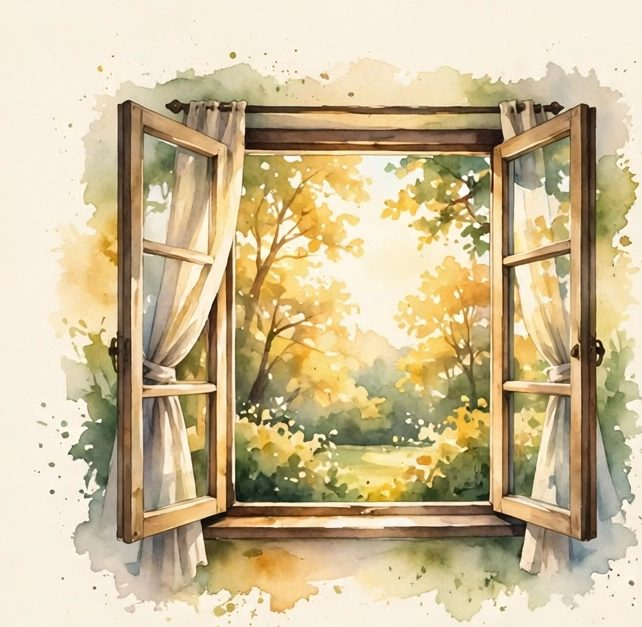
A window flung wide open to a bright golden morning, the garden shining beyond it.
The question that gives this hall its name arrives plainly, usually in a quiet moment, and it is rarely asked by people who are suffering. It is asked by people whose lives are functioning — work done, roof sound, table set — and who notice, standing in the middle of all that adequacy, that some hours glow and most do not, and they would like to know why. The Vivid Desk receives the question in many handwritings, and the word that does the heavy lifting in nearly every version is truly. Nobody is asking about excitement. They are asking about the real thing, and how to tell it from its imitations.
The answers gathered in the register are, on the whole, surprisingly modest. Cold water on a morning face. A task finished and stood back from. A voice at the door that the whole body is glad of. Bread still warm. Weather taken on the skin instead of through glass. The house keeps these answers without ranking them, because the pattern matters more than any single entry: aliveness, as reported by hundreds of ordinary witnesses, is less a property of events than a quality of attention brought to them. The hour does not change. The noticing does.
This hall walks the question slowly, room by room, the way the other halls of the house walk theirs. It prescribes nothing, because a prescription would falsify the evidence, and it promises nothing, because the tide this house is named for cannot be promised by anyone. What it offers is a register: what people have noticed, in their own hours, about the moments when they were unmistakably awake in their lives. The visitor is invited to read it the way one reads tide tables — not as orders, but as a record against which to check one's own shore.
2The House at Full Tide
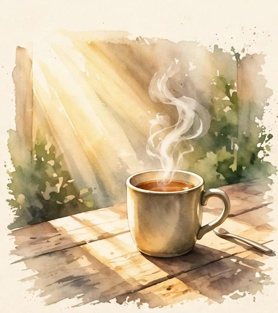
A mug of tea steaming in a shaft of sunlight on a wooden table.
The house imagines a life the way a shoreline imagines the sea. Some hours the water is far out across the flats, and a person walks their day at a distance from it, busy with the dry work of the upper beach. Some hours it comes in — not as storm or flood, but steadily, until it reaches the steps, the garden, the very door — and everything in the life is briefly touched by it and made reflective. Full tide is the name this house gives to that condition: not ecstasy, not emergency, only the water all the way in.
The rooms of the house are arranged by the tide rather than by any system of improvement. There is the bright kitchen where mornings are taken seriously. There is the bench where work is done with both hands. There is the door left open in good weather, and the chair by the window where rest is taken without apology. The Keeper keeps the tide tables of ordinary days in a plain hand, and notes that full tide, when it comes, usually comes quietly — in the middle of a task, in the middle of a conversation, in the middle of an hour nobody had marked for anything.
A house at full tide is not a loud house. Nothing in it is being celebrated, and nobody is performing their aliveness for an audience. The meals are ordinary meals; the work is ordinary work. What has changed is that nothing essential is postponed — the swim is taken, the letter written, the friend telephoned, the hour spent where the person actually is instead of where they are merely planning to be. The register records such days without underlining them. The water was in. That is the whole entry, and it is enough.
3Alive Is a Noticeable Thing
Aliveness begins, in most of the register's entries, as a noticing. A person is halfway through an hour — any hour — and registers, almost in passing, that the hour has texture: the air has a temperature, the light has a direction, their own step has a sound. Nothing has been added to the hour. It has simply been perceived, the way one perceives on entering a room that the room is warm. The house treats this noticing not as a small thing but as the thing itself, the hinge on which every other room in the hall turns.
The register is careful to distinguish noticing from chasing, because the two have opposite effects. What is noticed settles and can be recorded; what is chased tends to move, the way a bright fish moves when a hand closes over the water. People who pursue vivid hours as quarry report, with some frustration, that the hours grow shy. People who practice noticing report the opposite: the supply appears to increase, though the house suspects the supply was constant and only the accounting improved.
It should be said plainly that unregistered hours are not wasted hours. Sleep passes unregistered, and so does much kindness, much routine competence, much of the quiet maintenance by which a life holds together. The house grades none of it. But the noticed hours are the ones memory keeps and returns to, and a life, looked back on, is partly the sum of what was noticed in it — which is why this hall is devoted less to having brighter hours than to noticing the ones already being lived.
4The Keeper of the Vivid Hour
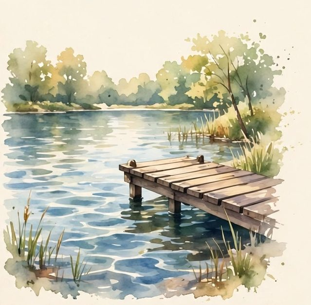
A workbench with hand tools laid out in warm bright light, ready for the day's work.
The Keeper of the Vivid Hour keeps the register, answers the correspondence that arrives at the Vivid Desk, and has no method to sell. The Keeper's qualification, if it can be called one, is a long habit of noticing, maintained in pencil over many years: what the weather was, what the hands were doing, who was in the room, and whether the hour, for whatever reason, came in at full tide. The handwriting is unhurried. Some pages are dense; some record a whole season in a line.
The Keeper's work is mostly refusal, performed politely. The Keeper declines to grade anyone's hours, declines to convert the register into advice, and declines — most firmly of all — to promise that any hour can be made vivid by effort of will. What the Keeper does instead is ask the questions the register was built from: What was the body doing? What did the air feel like? What had just been finished, or just begun? Correspondents often find that answering the questions is the entire benefit, and that the benefit was available all along.
The Keeper's own vivid hours, as recorded, are unremarkable to read and apparently entirely sufficient to live: early light on a bench, a tool that fits the hand, tea taken standing at an open door. The desk is open to anyone who writes. The house keeps no list of those who never write, and draws no conclusion from their silence. The register simply continues, page after page, in the belief that an honest record of bright hours is worth more than confident instructions for producing them.
5Not Thrills — Vividness
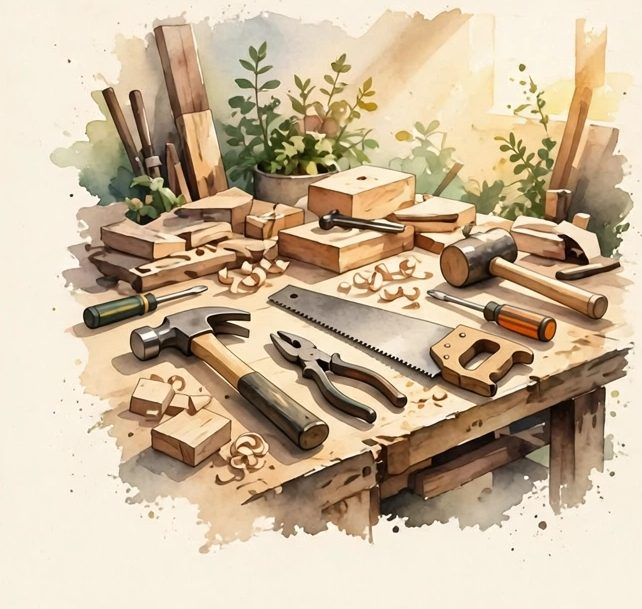
A red ball resting in bright grass beside a garden path.
This house draws a firm line between two things that are often confused: a thrill, which is done to a person, and vividness, which is done by attention. A thrill arrives from outside, at speed, and departs the same way, leaving the hour it occupied oddly difficult to recall in detail. Vividness is slower and quieter, and it leaves the opposite residue — a small hour that can be reconstructed years later almost entire: the temperature of the water, the exact light, the taste of the bread. The register trusts the residue as evidence of which of the two a life is actually nourished by.
The entries bear this out with some consistency. The swim in cold water outlasts, in memory, a great many spectacles that cost more and were louder. The conversation that went somewhere real outlasts the event that was designed to dazzle. Intensity, it turns out, fades at roughly the rate it arrived, while texture — the senses fully reporting, the attention fully present — has a much longer half-life. The house does not conclude that intensity is worthless. It concludes that intensity is a poor unit of measurement for a life.
Nothing in this room is a case against excitement, which has its honest place in any life and its own bright pages in the register. The case is only against the mistaken exchange rate: the belief that the loudest hour must have been the most alive one, and that a quiet hour must have been a lesser coin. The Keeper weighs hours by a different scale. Some of the heaviest entries in the register are nearly silent, and some of the lightest made a great deal of noise.
6The Question Under the Question
When a correspondent asks what makes them feel truly alive, the Vivid Desk has learned to listen for the second question standing behind the first, because there nearly always is one. It runs something like this: why do so many of my hours feel otherwise? The first question is about brightness. The second is about the flat stretches between brightnesses, and it is usually asked with more feeling, and occasionally with shame, as though the flatness were a verdict on the person asking.
The house answers the second question first, and answers it with a refusal: flat hours are not a verdict on anyone. Hours go flat for ordinary, unglamorous reasons — tiredness that has not been honored, repetition without variation, grief moving at its own slow pace, weather, season, the simple arithmetic of a life that contains more hours than anyone could keep bright. The register's correspondents include the vivid and the dulled in the same handwriting, because they are the same people on different days, and the tide that defines this house goes out as a condition of coming in.
Answer the surface question honestly, and the deeper one often softens on its own. A person who knows, from their own record, what reliably wakes them stops fearing the dull hours quite so much; the dull hours become weather rather than climate, a stretch to be walked through at an ordinary pace instead of a country they fear they have moved to. The house cannot shorten anyone's flat stretches. It can only testify, from a long register, that they have always ended, and that no one's life in its pages was ever graded by them.
7Aliveness Is Not a Mood
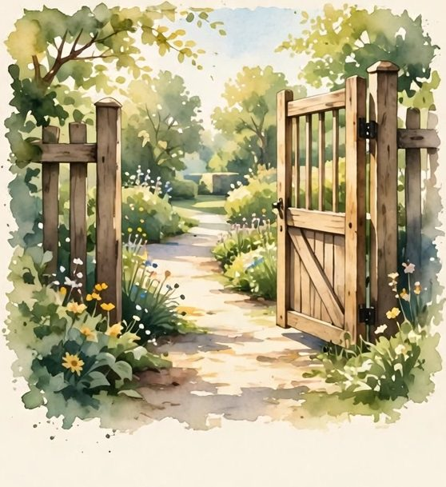
A garden gate standing open onto a sunny path, bright fields beyond.
A mood is weather that happens to a person: it arrives uninvited, colors everything for a while, and lifts according to its own schedule. Aliveness, as this house keeps the word, is something different in kind — closer to eyesight than to weather. It is a capacity, exercised or unexercised, rather than a condition that descends. A person does not wait for vividness the way they wait for cheerfulness to return, and the distinction, once made, relieves a great deal of quiet pressure.
The distinction matters because moods cannot be commanded and should never be graded. Anyone who has been told to cheer up knows the uselessness of instructions addressed to weather. But attention — the faculty this hall is actually about — can be practiced gently, the way eyesight is used: not forced, simply directed. Toward the cold air. Toward the work in the hands. Toward the person across the table. The register's entries are full of vivid hours that occurred inside unremarkable moods, which is only possible if the two are governed by different laws.
Indeed, some of the register's most trusted entries describe a low mood and a vivid hour occupying the same morning without contradiction. The sadness was present; so was the swim. The worry had not lifted; the bread was nevertheless warm, and noticed as warm, and the noticing counted. The house offers this not as a technique for managing feelings — it offers no techniques — but as a plain piece of geography: aliveness and mood are neighboring countries, and a person can stand in one while the weather of the other passes overhead.
8It Rarely Announces Itself
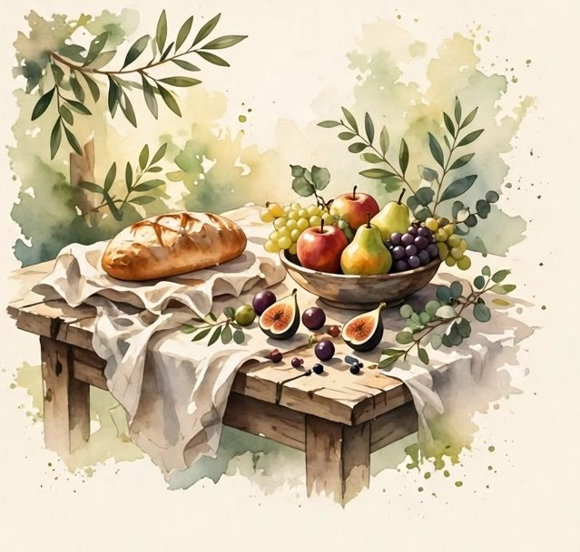
A rustic table set with bread and fruit in morning light, the chairs still empty.
Vivid hours seldom arrive with any ceremony. They do not knock. In the register they are almost always recorded in the past tense — noticed in the middle of the hour, if the person was lucky, or afterwards, in the evening, when the day was being put away and one stretch of it was found to be still warm. The Keeper has read thousands of entries and can report that almost none of them begin with the words: I knew at once. They begin, characteristically, with: It was only later that I realized.
The house suggests this is a mercy rather than a defect. An hour that announced itself would invite performance — the person would begin watching themselves being alive, arranging their face for the experience, and the experience, which depends entirely on undivided attention, would quietly leave by the side door. Aliveness prefers to be caught unawares, in shirtsleeves, in the middle of the shopping or the sanding or the swim. It is one of the few good things that cannot survive being stared at directly, and the register respects the arrangement.
Hence the house's whole method, such as it is: afterwards, write it down. Plainly, briefly, in the past tense, without trying to make the entry brighter than the hour was. Over months the entries accumulate into a pattern, and the pattern — which hours, which causes, which company — teaches what no single vivid hour can teach by itself. No hour needs to know it was vivid while it was happening. The register knows afterwards, and afterwards is soon enough.
9The Body Knows First
Before the mind composes its account of an hour, the body has usually already voted. The lungs open a little wider. The shoulders come down from wherever they had been keeping themselves. The step quickens on ground that has not changed. Food tastes like more than fuel. The register trusts this early evidence precisely because it arrives before interpretation — before the story a person tells about their day has a chance to edit the day itself. The body's report is brief, unliterary, and very difficult to fake, including to oneself.
This is why the Vivid Desk, replying to correspondents, so often asks unglamorous questions. Not what the hour meant, but what the hands were doing. Not how the day ranked, but what the air was like on the skin, whether anyone had eaten, whether the work had resistance in it. Again and again, the answers to the small questions locate aliveness more reliably than any theory the correspondent had prepared. The theory says a life must be rearranged. The hands report that the person was awake for eleven minutes while mending a fence, and would like the record to show it.
The body is not the whole of the matter — the house is a house of attention, not of appetite — but it is the first witness in every inquiry and, in the Keeper's experience, the least flattering one. It does not care how the hour looked, or how it will sound when described, or whether it fits the narrative the person is maintaining. It reports temperature, hunger, tiredness, ease. The register begins there, every time, the way a tide table begins with the moon and not with anyone's hopes for the weather.
10An Hour Can Hold It
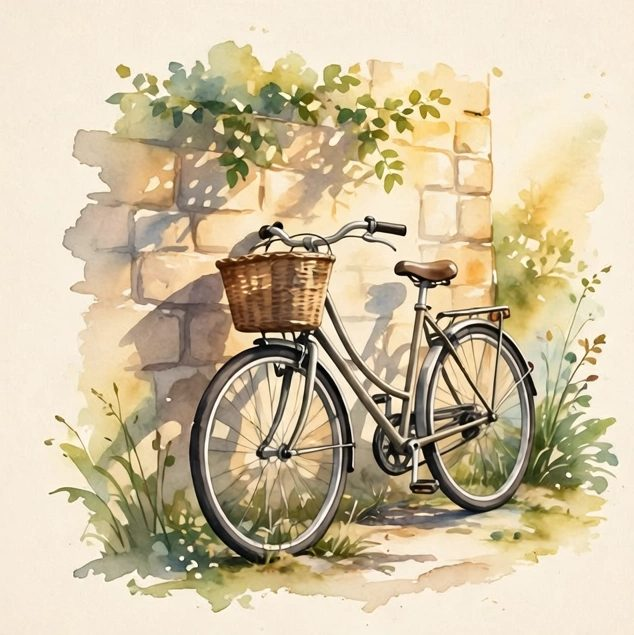
A bicycle leaning against a wall in bright sunshine, its shadow sharp on the stones.
Aliveness does not require a day, a journey, or an occasion. A single hour can hold it entire — sometimes considerably less than an hour can — the way a cup, which is a small thing, holds water completely and without strain. This fact, recorded throughout the register, is one of the kindest the house owns, because it returns the whole subject to a human scale. Nothing needs to be escaped, purchased, or reorganized. The unit of aliveness is not the holiday or the turning point. It is the hour, and hours are the one currency every life is already rich in.
It also lowers the stakes in a way that makes noticing easier. A person waiting for a vivid life tends to overlook vivid hours, the way a person saving for a feast may eat every ordinary meal without tasting it. The register's correspondents who fare best with this subject are those who quietly reduced their unit of account: not a brighter existence, just this morning's swim attended to fully; not a new life, just the walk home taken with the senses open instead of the day replaying on a screen behind the eyes.
The smallest entries in the register are frequently its brightest, and the Keeper copies some of them into the front of the book as a standing reminder. Ten minutes of cold air before breakfast. One song, sung while washing up, at full voice and poor pitch. A single page of a letter, written by hand and meant. The entries make no apology for their size, and the house makes none on their behalf. An hour can hold it. Often, a quarter of an hour can.
11It Is Not the Opposite of Rest
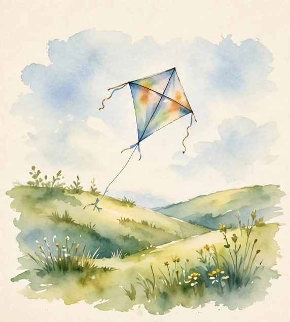
A single kite flying high over a green hill, its string fine against the sky.
This house refuses, on principle, the quarrel that is so often arranged between aliveness and rest, as though the two were enemies competing for the same hours. The refusal is written into the building's name. A tide that never went out would not be a tide; it would be a flood, and then a stagnation. Rest is the water gathering itself, the necessary withdrawal by which the next arrival becomes possible. The register keeps rested hours and vivid hours in the same book, in the same ink, and will not have either column used to shame the other.
Sleep, idleness, the chair by the window with nothing accomplished in it — these appear in the register not as gaps in a life but as part of its economy, as load-bearing as any bright hour. Again and again the pattern shows itself: the vivid morning that was plainly purchased by an evening of doing nothing in particular; the swim that was possible because the person had finally slept. A household that treats rest as aliveness's opposite ends, reliably, by dulling both — too tired to notice, too guilty to rest.
The Keeper therefore keeps a page for rest and reads it without embarrassment, and recommends the visitor do the same with their own record. Some hours are for being awake in. Some hours are for recovering the ability to be awake, and the second kind is not a failure of the first. When the tide goes out, the house does not hold an inquiry. It notes the hour, lets the flats glisten in the low light, and trusts the arrangement that has governed every shoreline longer than any house has stood on one.
12The First Rule of the Vivid Hour
Every hall of this house has a first rule, and the rule of the vivid hour is short enough to be kept whole: aliveness is noticed, not forced; recorded, not graded. Everything in the rooms that follow is commentary on that single sentence. The noticing half of the rule is the practical half — it directs a person toward attention, which can be exercised, and away from manufacture, which cannot. The grading half is the merciful half. An hour that is being scored is an hour half spent outside itself, and the scorekeeper's table is a poor place from which to watch the tide come in.
The rule also protects the visitor from the house itself, which is a protection the Keeper insists on in writing. No room in this hall issues instructions for a brighter life, ranks methods, or keeps a table of results. Where the halls that follow appear to offer guidance — repeat a small cause, keep a register, take the weather on the skin — it is to be read as evidence being reported, not orders being given. The register says what has been noticed. What a visitor does with another person's noticing is the visitor's own affair, and the house respects the boundary.
Keep the first rule and the rest of the hall follows almost by itself. Small causes, honestly repeated, because forcing is forbidden. Dull hours, patiently weathered, because grading is forbidden. Other people's bright fragments regarded without envy, because comparison is only grading turned outward. And the tide trusted to return on its own schedule, because it always has. The Keeper asks correspondents to write the rule at the top of their own registers. Most report that the rest of the page behaves better underneath it.
13Where Aliveness Hides
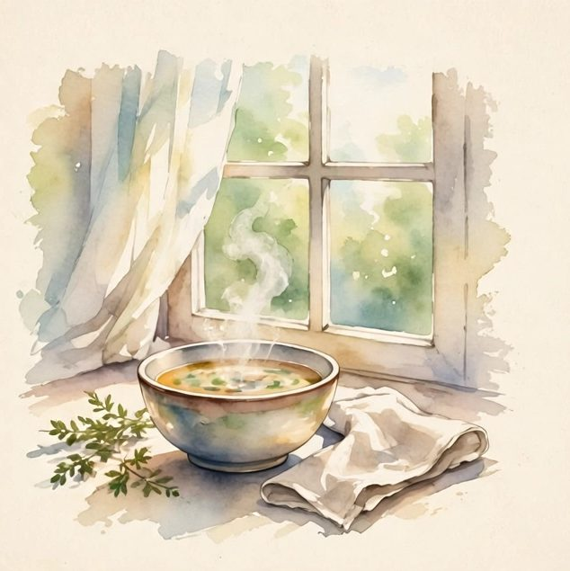
A steaming bowl of soup beside a bright window, light falling across the table.
The second hall of the house is a map of hiding places, and its first finding is that aliveness hides in plain sight. It is found, disproportionately, in the hours nobody photographs and nobody would think to describe at a dinner party: the first hour of the day, the middle of the errands, the walk that was only a way of getting somewhere. The register's evidence on this point is extensive and a little comic. Asked where they were when the tide came in, correspondents overwhelmingly answer: nowhere in particular. Doing something ordinary. Not expecting it.
It hides, the house believes, not because it is rare but because it is unregarded — filed by most people under the wrong names, or under no name at all, and so never searched for where it actually lives. Much of the register's work is therefore reclassification. Hours already lived are re-read with attention and found to have contained more than their owners reported at the time. The map in this hall is less a guide to new territory than a new legend for an old map: the same coastline, with the soundings finally marked.
The rooms that follow name the hiding places one by one, drawn from many years of correspondence: cold water and hot tea, work that takes both hands, weather, errands, small risks honestly chosen, things finished and things deliberately left open. None of them requires money, travel, talent, or anyone's permission, and the house regards that as the most important fact on the map. Whatever else aliveness may be, in the register's long record it is not a luxury good. It is a common one, hiding where common things hide — in use, in reach, in the middle of the week.
14In the First Hour of the Day
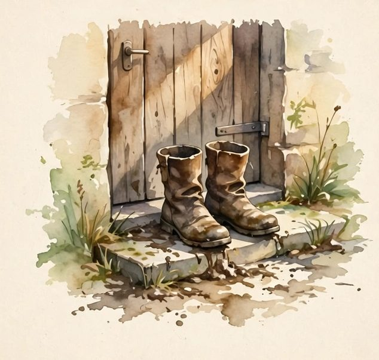
A pair of worn boots standing by a door, lightly muddy from the morning fields.
The first hour of the day has a clarity that later hours have to work for. The day has not yet been spent on anything; the senses are fresh from sleep and reporting at full strength; the light is arriving like news rather than settling like habit. Correspondents report vividness at this hour entirely out of proportion to anything that happens in it — tea, cold air at the door, a task begun without hurry — and the house suspects the disproportion is the finding. The events are minimal. The attention is undivided, because nothing has divided it yet.
There is also a structural kindness in the first hour: it has not been promised to anyone. Meetings, messages, and obligations colonize a day from the middle outward, but the early hour often remains unclaimed, a small piece of the estate that is still the owner's own. Vividness seems to prefer unclaimed ground. The register contains many entries that begin, in effect: before anything started. The person was awake before the day began making its requests, and was met, in that unguarded interval, by the plain fact of being alive in it.
The house is careful, here as everywhere, not to turn the observation into a schedule or a standard. Not everyone is given mornings; work, children, illness, and temperament all dispose of the first hour differently, and nobody's life is graded by their dawn. The room records only this: where a first hour can be kept unhurried, it tends to repay the keeping out of all proportion — and the same unhurried quality, smuggled into any other hour of the day, tends to work the same small miracle there.
15In Cold Water and Hot Tea
Some of the register's shortest entries are, in their entirety, temperatures. Got in the river. Came out blue and entirely awake. Or: tea on the step, steam in the cold air, nowhere to be. The pairing is not accidental. Cold water and hot tea are the two poles of a small daily axis, and between them a person can be thoroughly located in their own skin — which is, the house notes, where aliveness is registered, whatever else it may also be. The shock and the comfort are not opposites in the record. They are consecutive verses of the same short poem.
Cold water asks everything of attention for about a minute, and attention, asked so completely, complies. Nobody composes grievances or rehearses conversations while getting into a cold river; the whole mind is requisitioned by the skin. Then the water either becomes bearable or the swimmer gets out, and in both cases the world on the far side of the minute is noticeably sharper than the world before it. Hot tea performs the return journey at walking pace: warmth restored gradually, the senses standing down one by one, the hour reassembling itself around the cup.
The house draws no doctrine from temperature and prescribes no plunges. It notes merely that the senses seem to trust contrast to remind them of themselves, and that this reminder is among the cheapest and most repeatable in the entire register — available at a tap, a kettle, a shoreline, in almost any life, in almost any season. A person does not need to believe anything about cold water. The water does the whole of the work, in about a minute, and asks only to be entered.
The Vivid Desk
One desk receives all correspondence for this house — questions, corrections, and word of any hour a visitor felt truly alive: what woke it, how long it lasted, what the hands were doing. It is read in the order it arrives, and entered in the register of vivid hours.
16In Work Done With Both Hands
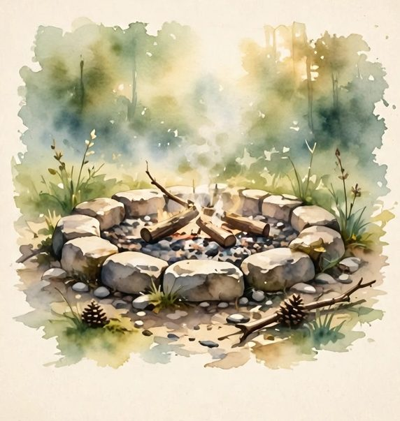
A campfire ring with gentle embers in morning light, a kettle resting nearby.
Work that takes both hands takes the whole attention along with them, whether the worker planned it that way or not. The mind cannot wander far when the hands are responsible: the dough is at the stage where it must be folded, the wood is at the angle where it must be held, the rope, the hem, the row of seedlings each make their small non-negotiable requests. The register's work entries share this quality of gentle compulsion, and the people writing them share a tone — a sort of surprised restfulness, as though the hour had held them rather than the other way around.
There is a grammar to such work that thought alone does not have: resistance and response. The material answers back. Clay centers or refuses to center; soil gives or does not give; the saw binds or runs true. This answering-back is, the house believes, a large part of the vividness. A person working with both hands is in a conversation that cannot drift into abstraction, conducted at the speed of the hands, with evidence arriving continuously through the fingertips. Hours of it pass with the strange property of feeling both full and short.
And the work leaves something behind it: a thing made, a thing mended, a fire laid, a bed weeded — evidence that the hour existed and that the person was in it. The tiredness that follows is of the good kind, the kind the register distinguishes carefully from depletion: located in the muscles, accompanied by appetite, ended by sleep. Aliveness in this room is not a feeling added to the work from outside. It is the work itself, felt from inside, by someone whose attention had nowhere else it was allowed to be.
17In Being Outdoors, Unscheduled
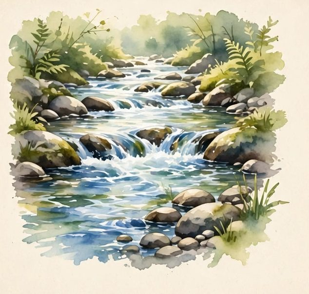
A river running bright and fast over stones, green banks in clear light.
Outdoors without an agenda is a distinct country in the register, and its border is easy to miss: it is crossed the moment a walk stops being a way of getting somewhere, or of achieving a distance, or of earning anything, and becomes simply where the hour is being spent. A person under a tree with nothing to complete. A shoreline followed because it was there. The entries from this country have a looseness to them, as though the handwriting itself had taken off its watch.
The outdoors keeps attention employed without hiring it. Weather shifts, light moves, ground varies underfoot, birds file their brief reports — a continuous supply of small novelty, delivered free of charge and without appointments, at exactly the rate a mind can absorb without effort. Indoors, novelty must usually be arranged, and arranged novelty has a way of feeling like work. Outside, it is simply the medium one is moving through. The register notes how many vivid hours are described as though they had happened to a person who was merely available when they passed.
The operative word in the room's title is the second one. Even a beautiful place becomes an errand when it is timed, measured, photographed for delivery, and reviewed. The house is not against summits or itineraries, which have their own honest rooms elsewhere in the hall. It observes only that unscheduled outdoors is a different substance from scheduled outdoors, and considerably more reliable in the register — perhaps because a person who has left the schedule at the gate has also left behind the part of the mind that would otherwise be grading the hour while living it.
18In the Middle of Ordinary Errands
The queue at the bakery. The bus stop in good light. The hardware shop, where the thing needed was in stock and the man behind the counter had a story. The register is full of vivid hours reported from the middle of errands — from time that was officially only a means to an end, spent in transit between the parts of the day that were supposed to count. If the house were forced to name the single most common location of aliveness in its records, it would not name a summit or a shoreline. It would name the middle of an ordinary Tuesday's necessary business.
An errand has a purpose but not a performance, and that turns out to be a nearly perfect arrangement for attention. The mind is occupied enough not to fret and free enough to wander where wandering is fruitful: to the light on the street, the faces, the weather doing something interesting over the rooftops. The house calls these the smuggled hours — vividness carried across the border of a useful day inside an ordinary errand, undeclared and untaxed, arriving home in the same basket as the bread.
No errand needs to be enjoyed to be vivid, and the house is not suggesting that queues are secretly delightful. The point is narrower and, the Keeper thinks, more useful: the necessary hours are made of exactly the same time as the celebrated ones. They are not a waiting room outside life, through which a person passes on the way to living. They are a substantial part of the estate itself, and the register's evidence is that the tide comes in over them as readily as over any shore that was dressed for the occasion.
19In Risk, Small and Chosen
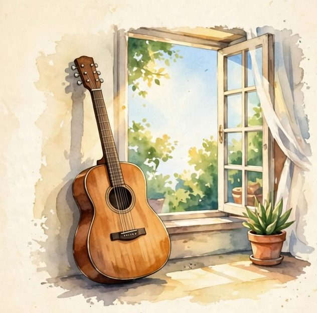
An acoustic guitar leaning beside an open sunny window, light across the floorboards.
A small, chosen risk concentrates attention the way a lens concentrates light. The cold plunge is a risk of this size. So is the honest sentence spoken in a room where it would be easier to stay pleasant, the application sent, the instrument taken up in middle age, the attempt made in full view of its possible failure. What these share is not danger — the register is emphatic on this point — but stakes: something real, however modest, has been put in play, and the whole person attends because the outcome is not entirely in their keeping.
The house is careful with this room, because risk is a word that invites exaggeration. The risk in its register is small, and it is chosen, and those two adjectives do all the work. Recklessness dressed as courage earns no entries here; neither does the manufactured peril that is purchased by the hour and left behind at the gate. The power of the small chosen risk lies precisely in the choosing — it is the person, not the circumstance, who has raised the stakes, and the person's attention responds to their own decision with a completeness it rarely gives to other people's alarms.
What the risk returns is legibility. For the length of the attempt, a person can feel the edges of their own life again — where their ability runs out, where their nerve runs out, and how much further out both of those lines actually lie than habit had reported. That feeling of edges is a form of waking, and it survives the outcome: the register holds as many bright entries from failed attempts as from successful ones. The attempt was the hour. The result was only news.
20In Finishing Something
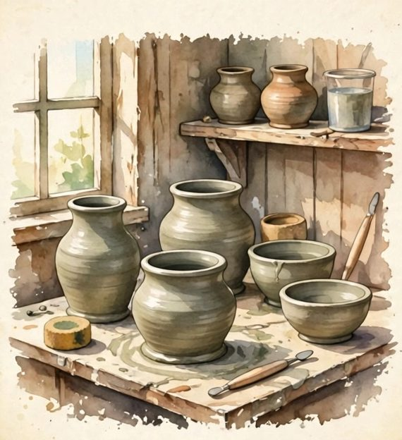
A pottery studio corner with freshly thrown wet clay pots standing in a bright row.
There is a clean note that sounds at the end of a piece of work — the last stitch drawn through, the final coat going on, the letter sealed and stamped, the final row of the garden dug — and the register recognizes the note instantly wherever it appears. Finishing is one of aliveness's most reliable causes, and one of its most democratic: it is available at every scale, from a mended shirt to a built house, and it does not appear to scale its effect to the size of the thing finished. The small completion rings nearly as true as the large one.
Part of the vividness is structural. A finished thing divides time into a before and an after, and for a moment the person stands in the after with a clear view of the whole — the work entire, and themselves entire in relation to it, in a way that the middle of a task never permits. Middles are all attention and no perspective. Endings briefly give both at once. The register notes how often correspondents describe the moment not as triumph but as a sort of quiet survey: standing back, hands still, seeing what the hours added up to.
The house does not preach completion, and the very next room argues the opposite case with equal respect. Some things are better kept open; some endings are only interruptions wearing formal dress. What this room records is narrower: that endings honestly reached — where the thing is done, and known by its maker to be done — wake people with unusual reliability. In a life where much is maintenance and little is ever finished, a true ending is a small ceremony, and the senses, which love ceremonies more than they love spectacles, attend it in full.
21In Starting Something Unfinished by Design
The previous room praised finishing; this one keeps the opposite case, and the house finds no contradiction in holding both. Some of the most durable sources of aliveness in the register are things begun without any intention of concluding them on schedule — the garden, the language being learned a page at a time, the sketchbook, the boat under its tarpaulin in the yard. They were started the way one plants a tree whose shade is a rumor. Their unfinishedness is not a failure of discipline. It is the design, stated at the outset and honored ever since.
Starting wakes a different faculty than finishing does. Finishing narrows; the endgame of any work is a funnel. Beginning widens: the attention is outward and inquisitive, tolerant of clumsiness, greedy for the feel of the material. The register honors what might be called the beginner's hour — the first rows, the first chords, the first pale row of seedlings — precisely because nobody in it is performing competence. A person in a beginner's hour is too occupied with the thing itself to grade themselves against it, and that temporary amnesty from grading is vivid almost by definition.
Unfinished by design must be distinguished from unfinished by neglect, and the register draws the line at intention. A neglected thing reproaches; a deliberately open thing accompanies. It waits without accusation through busy seasons, accepts ten minutes when ten minutes is what there is, and remains a place in the life where a person is a beginner on purpose — which is to say, a place where the future is still allowed to be larger than the past. Many correspondents, writing in their seventies, identify exactly such an open beginning as the brightest furniture of their days.
22In Weather, Felt on the Skin
A mountain trail winding upward in clear bright light, the peaks open above.
Weather is the world's way of touching back. Most of life is conducted through barriers — glass, roofs, forecasts, the edited summary of a day — but weather, taken on the skin, is unmediated: wind arriving from somewhere real, rain with a temperature and a direction, sun that can be felt making its slow argument on the back of the neck. The skin is the oldest register the house knows of, older than any notebook, and weather writes in it directly, without asking the mind to take dictation.
The entries in this room are not all pleasant, and the house finds that significant. The walk home in rain is remembered in detail when a hundred mild, upholstered days have blurred into one another. The cold morning that stung the face is kept; the temperate afternoon is not. It seems the senses log what varies, and weather is variation delivered at the scale of the whole body. A person does not need to seek discomfort — the register is not a manual of endurance — but the evidence is plain that comfort perfectly maintained is weather's opposite in the record as well: unwritten, unremembered, smooth as glass.
What the room recommends, if it recommends anything, is only honesty of dress and a willingness to be out in the day that actually occurred, rather than the one that was preferred. Ten minutes of real weather, felt on the skin at first hand, does more for the register than a whole day of the outdoors observed from a window and approved of in principle. The body was built as an instrument for exactly this registration. The house merely notes what happens, reliably, on the days when the instrument is taken out of its case.
23In Rooms Where People Laugh
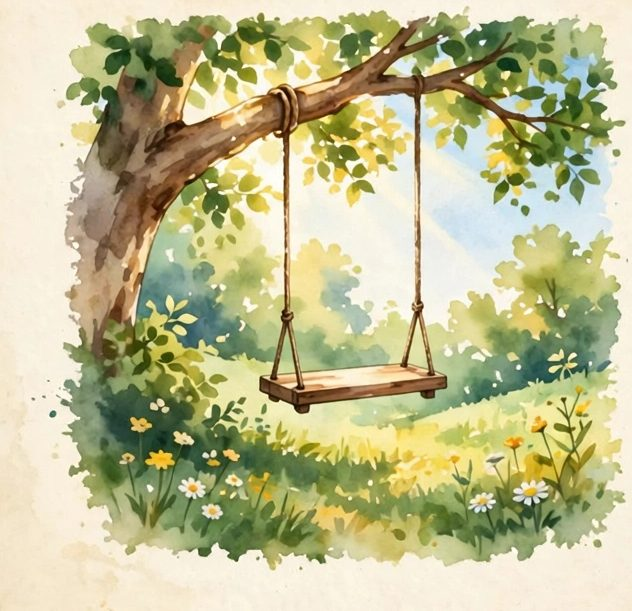
A tree swing hanging in bright sunshine, its ropes still against the green shade.
There are rooms the register can identify by sound alone. Laughter loosens a room the way sun loosens a garden: attention relaxes its grip, the senses come forward, and an hour that might have been merely agreeable becomes, in the record, one of the bright ones. Correspondents rarely write to describe the joke. They write about the room — who was in it, how long it had been since they had all been together, the exact unguarded quality of the noise — the way a person describes a house they once lived in, room by room, from memory.
It is seldom the wit that matters. What matters is the permission structure of the room: nobody performing, nobody grading, nobody holding the hour up against an image of how it should be going. Laughter of the kind the register records is a by-product of that permission, the sound of several people simultaneously failing to manage themselves. This is also why such rooms resist arrangement. A gathering convened for the purpose of merriment carries its purpose like a tray of drinks — carefully, with both hands, watching the glasses. The laughter arrives, when it arrives, after the tray has been set down and forgotten.
Such rooms cannot be scheduled, the house concludes, but they can be frequented. The distinction is the whole content of this room. One keeps returning to the tables where laughter has happened before, keeps the friendships in repair, keeps accepting the ordinary invitations — suppers, walks, work shared in good company — among which the laughing hours hide, unannounced, like bright fish in familiar water. The register's advice, if the word must be used, is simply to maintain the water.
24Found, Not Manufactured
The second hall closes with its governing fact, which the Keeper asks correspondents to copy into their own registers exactly: aliveness is found, not manufactured. The comparison the house reaches for is mushrooming. A person finds mushrooms by walking the right ground in the right season with attention turned on, and by knowing, roughly, what they are looking at. Nobody has ever found a mushroom by commanding the field, and nobody in the register has ever manufactured a vivid hour by commanding themselves. The hours arrive. The walking and the noticing are what is ours.
Manufacturing attempts are recorded in the register at some length, and with sympathy, because everyone has made them: the celebration forced into significance, the spectacle purchased to stand in for a feeling, the holiday engineered so thoroughly that its engineer spent it operating the machinery. These entries share a texture — effortful, airless, faintly disappointing even when everything worked — and a moral their writers drew themselves, without the house's help: that an hour cannot be both produced and lived by the same person at the same time. Production is a job. The job displaces the guest it was arranged for.
What can be done, and it is genuinely something, is preparation. The ground can be walked: the small causes kept near, the senses kept honest, the register kept truthfully, the hiding places in this hall visited often enough to be familiar. Then the finding happens, on its own schedule, with its usual preference for arriving unannounced in the middle of ordinary business. The tide is not summoned by anyone in this house. It is met — which turns out, in entry after entry, to be enough of a role for a person, and a better one than it sounds.
25The Senses, Reporting
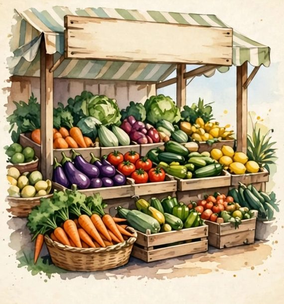
A market stall heaped with colorful vegetables in bright light, all its signs blank.
The third hall of the house is the most practical, because it concerns the instruments every visitor already owns. Before there is any idea of aliveness — any question, any register, any philosophy of the vivid hour — the senses have already filed their reports: the temperature of the air, the direction of the light, the weight of the thing in the hands, the smell arriving from the kitchen or the field. The house reads these reports first, on the principle that an hour's vividness can nearly always be reconstructed from sensory evidence alone, the way a day can be reconstructed from its weather.
Abstractions arrive later and contribute less. A correspondent writes that the hour was meaningful, significant, important — and the entry stays pale. Another writes that the water was so cold it made her laugh out loud, that the bread tore rather than cut, that the light came through the orchard sideways — and the hour stands up off the page entire, decades later. The house does not conclude that meaning is worthless. It concludes that meaning is stored in the keeping of the senses or it is not stored at all, and that anyone wishing to be more awake in their life could do worse than begin by believing their own eyes, ears, and skin.
The rooms that follow take the senses one by one — cold air, rain-smell, bread and woodsmoke, music, weight, bare ground, sun, a voice, hunger, earth and dough. They are written as reports rather than exercises, because the house maintains, perhaps stubbornly, that the senses need no improvement program. They are in working order in nearly everyone. What they need is to be consulted — treated as witnesses whose testimony about the hour outranks the summary the mind was preparing to file.
26Cold Air in the Lungs
A small sailboat heeling in a bright fresh wind, the water sparkling around it.
The first deep breath taken outdoors on a cold bright morning is a small event with a long echo. The whole body is informed at once: here is the day, here is its temperature, here is the fact of being a creature that breathes it. Correspondents mention this breath constantly, usually in a subordinate clause, on the way to describing something they considered the real subject — the climb, the swim, the journey. The house has come to believe the breath was the real subject, and the rest of the entry is its frame.
Breath is the one sense nobody schedules and everybody carries, the register that never closes. This may be why its entries are so reliable: there is no performance available in breathing cold air, no way to do it for an audience, no image to maintain. The lungs report, the ribs register the report, and attention — that easily distracted official — is switched on by the simple physical fact of cold arriving where warmth was. People describe the moment with words like reset and cleared, which the house records without endorsing any further theory. Something plainly happens. It happens at doorways, on summits, on winter platforms, at the top of the cellar stairs.
No technique is prescribed in this room; the house is suspicious of techniques for things the body does unassisted. It is enough to notice, once in a while, that the air has a taste and a temperature and a smell of its season, and that noticing it — really noticing, for the length of one full breath — is already a form of waking that no one has to earn. The register's coldest entries and its brightest ones are very often the same entries, and they tend to begin at a door, with a lungful of the actual day.
27The Smell of Rain on Dry Ground
Rain falling on dry ground has a smell that is older than any word for it, though several languages have tried to keep one. It arrives after the first hot weeks, when the dust has been waiting, and it reaches memory by a shorter road than sight or sound travel — a whole season, sometimes a whole childhood of summers, returned in a single breath taken at an open door. The register contains entries in which nothing else about the hour is recorded at all. Just: the rain came at last, and the smell of it, and a line of dots where the writer evidently stopped writing.
Smell is, in the Keeper's experience, the most honest of the senses, because it cannot be argued with, performed, or sustained past its evidence. A person can look at a view and compose their response to it, but a smell either arrives or it does not, and it reports without consulting its owner. It is also the least governable: it ambushes. The smell of rain on dry ground does not ask whether this is a convenient moment to remember every summer that ever mattered. It simply files the entire archive at once, in the doorway, while the person's hands are full of shopping.
Such moments are brief and wildly disproportionate, and the house records them as primary evidence for its whole argument. Aliveness does not enter only through the front doors of occasion and achievement. It comes by the side doors — a smell, a temperature, half a song through a wall — with the regularity of weather and the ceremony of nothing at all. A register that only had columns for events would miss most of them. The Keeper's register has a column, the widest one, headed simply: noticed.
28Bread, Coffee, Woodsmoke
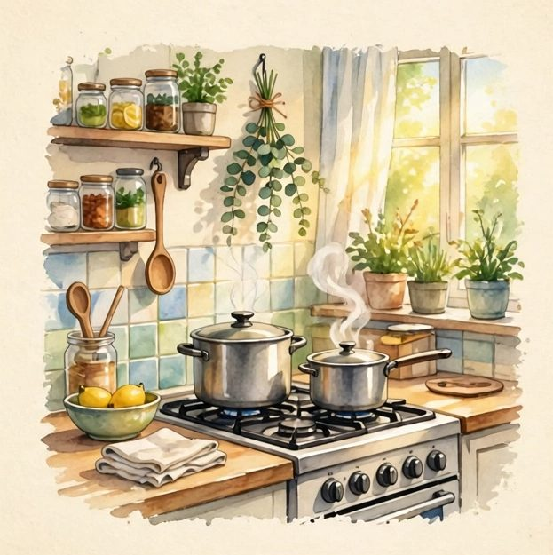
A bright kitchen with pots gently steaming on the stove, morning light at the window.
Bread proving under a cloth. Coffee grounds meeting hot water. Woodsmoke carried in on a coat that has been hung by the door to dry. The kitchen smells of the register form a small liturgy, repeated across thousands of entries in houses that otherwise share almost nothing — different countries, different centuries of custom, the same three smells returning like a refrain. The house has learned to read them as a set, and to trust them the way one trusts a chord more than any single note in it.
These are, at bottom, smells of provision: of care that has been made perceptible. Somebody ground, kneaded, lit, carried in. The senses read such smells the way they read a voice in the next room — as news that the world is being tended, that the household's machinery of feeding and warming is in human hands and running. This may be why the entries cluster at thresholds of the day: the return home, the first descent to the kitchen in the morning, the hour when the light goes and the stove is lit against it. Provision announces itself, and the body files the announcement under safety, and safety permits attention to rise.
A person does not need to cook elaborately to live among such reports, and the house is not recruiting bakers. A crust bought warm on the way home, a pot set to heat, a window opened at the right season to let the garden's green smell argue with the kitchen's — the register accepts all denominations. What matters is that the senses are given something true to report, in the place where the day is anchored, and that somebody in the house is awake enough to receive the report.
29Music at the Right Volume
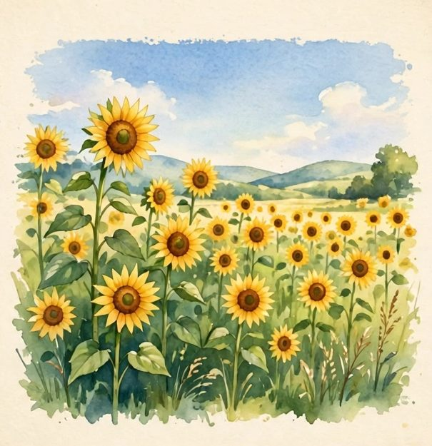
A field of tall sunflowers under a blue sky, their faces turned to the light.
Music has a volume at which it stops decorating a room and starts entering the body, and correspondents in the register are unexpectedly precise about the difference. Below it, the music is furniture. Above it, it is weather — something the hour is happening inside. The entries are rarely about concerts, though concerts have their place. They are about a song through a kitchen wall at the exact needed moment, a hymn in a small room, an old recording on a poor speaker that nonetheless got the volume right, and somebody's unaccompanied singing in the next field.
Part of the power is that music orders time from inside. An hour with music truly in it is measured differently while it lasts and remembered at greater length afterwards, as though the music had given the hour a spine. The register also notes the company music keeps in the entries: work goes differently under it, journeys shorten, grief becomes carryable at certain volumes for certain stretches — none of which the house explains, all of which it records, in the plain belief that the pattern is the finding.
The right volume is not loudness, and the register is clear about it. It is the level at which attention stops guarding itself — stops monitoring how the listener appears, stops keeping one ear on the door — and listens with the whole hour. This is as true of a single voice in a garden as of an orchestra; some of the brightest entries involve music so quiet that the listener had to stop working to hear it, and found, in the stopping, that the stopping was the vivid part. The music had only been the messenger. The attention was the message.
30The Weight of a Good Tool
A good tool declares itself by weight before it is ever used. It is lifted, and the hand receives a small report: balanced, honest, made of materials that intend to stay made, fitted by years of use to the one pair of hands that owns it. The report is instantaneous and has never once, in the register's experience, been wrong. Weight is information that bypasses opinion entirely, which is why the senses trust it — and why work done with a well-weighted tool has a grounded vividness that work with a poor one rarely achieves, however skilled the worker.
The register extends the thought well beyond the bench, because correspondents insist on it. A cast-iron pan with its decades in it. A pen that has written three books. A boat whose every rope is known by touch in the dark. Anything well made and well kept seems to lend its user a portion of its own honesty: the user slows to the tool's pace, trusts its evidence, and is rewarded with work in which attention and substance are in the right proportions. Against this, the entries record a particular flatness that attends the flimsy and the disposable — tools that ask nothing, answer nothing, and leave the hand uneducated.
There is a keeping implied here, and the house states it plainly: good tools are maintained, and the maintenance is itself among the register's vivid hours — the sharpening, the oiling, the mending of the thing that mends other things. A person alone at a bench in the evening, restoring an edge, is a recurring figure in these pages, and never a melancholy one. The weight in the hand says the world still contains substances that respond to care. The register knows of few reports the senses file with more confidence.
The Vivid Desk
One desk receives all correspondence for this house — questions, corrections, and word of any hour a visitor felt truly alive: what woke it, how long it lasted, what the hands were doing. It is read in the order it arrives, and entered in the register of vivid hours.
31Bare Feet on Real Ground
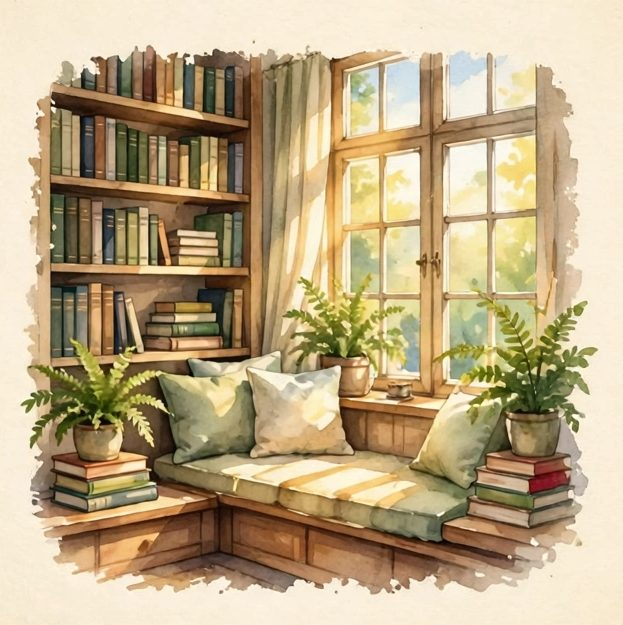
A library window seat bathed in sunshine, cushions worn soft by readers.
Shoes are a small civilization, admirable in many ways, and removing them returns a stream of information the body was plainly built to receive: temperature first, then texture, then the give of the ground — grass cool at the root, sand that shifts its account with every step, cold floorboards at dawn delivering their one sharp sentence. The register's barefoot entries are brief, bright, and disproportionately placed at the beginnings of things, as though going barefoot were less an activity than a decision to start the day at full resolution.
The information is not symbolic. A foot reads ground the way an eye reads a page, continuously and without effort, and most of modern life is conducted with that channel muted to a rumor through rubber and leather. Restoring it, even for the length of a garden, measurably changes the hour's texture in entry after entry — the walker slows, not from caution but from interest, because the ground has become various again, worth attending to stone by stone. The house notes this as one of the register's smallest and most reliable effects: a whole sense, switched back on by the removal of two objects.
The point is not a practice, and the house proposes no doctrine of the foot. It is a reminder that the ground is still there — various, immediate, and free — under every hour that has come to feel abstract, conducted at one remove through screens and summaries. A person cannot always take off their shoes, and the register keeps no tally. It records only that those who did, in grass or sand or cold kitchen tile, tended to write the hour down afterwards, which is the house's working definition of an hour that was lived awake.
32Sun After a Grey Week
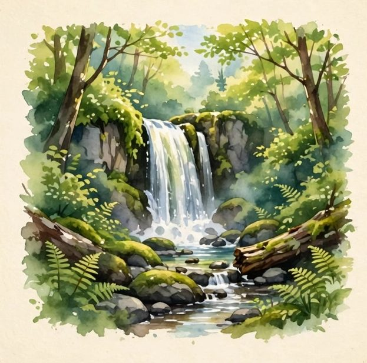
A waterfall in bright green woods, the spray lit by the sun.
Contrast is the senses' oldest teacher, and no entry in this hall teaches it more plainly than the first sun after a grey week. It is not the same sun as the sun that follows sun. The light is identical by every instrument and entirely different by the only instrument the register consults, which is a person stepping out of a doorway after six days of low cloud and standing — the entries are remarkably consistent on the choreography — quite still for a moment, with their face turned up, being briefly and entirely present.
The house does not wish anyone grey weeks, and it records the fact without celebration: vividness keeps its accounts, to an uncomfortable degree, in contrasts. The swim is brightest after the deskbound month. The meal is a feast after the climb. Relief — plain, unglamorous relief — is a legitimate and under-acknowledged form of brightness, and the register, which exists to record what actually wakes people rather than what should, enters it without apology. A philosophy of aliveness that cannot accommodate relief will find itself unable to explain most of its own evidence.
There is a further tenderness in this room, which the Keeper notes in the margin. The grey week is not thereby wasted, demoted to a mere setup for its ending. It was lived, at whatever resolution it allowed, and some of its hours had their own low light on them that the register also keeps. Contrast explains why the sun was vivid. It does not retroactively grade the cloud. The tide goes out without being scolded, and comes in without being required to apologize for the weather that made its arrival noticeable.
33A Voice You Love, Heard Live
A recording can carry a voice anywhere, and the register is grateful for recordings; but a voice heard live, in a room, is a different substance. It has breath in it, and the room's acoustics, and the whole unedited fact of the person — the pause while they find a word, the laugh that interrupts their own sentence, the drop in volume at the part that matters. The body knows the difference before the mind has finished identifying the speaker, and responds to a live voice the way it responds to weather: as information about a world that is actually present.
The entries are mostly of ordinary sentences. That is the finding, and the house underlines it: it is not what the voice says but that the voice is there, within earshot, in the same hour. A parent calling up the stairs. A friend in the next room, thinking aloud while cooking. A colleague, a child, a neighbor over the fence — plain words, made vivid by presence, recorded by correspondents who frequently confess they cannot reconstruct the conversation and would not trade the sound of it for a transcript of anyone's wisdom.
This is one of aliveness's cheapest causes and, by the same token, one of its least stockpilable: a recording can be kept, but the live voice exists only in its hour, and requires the listener to be there for it, unhurried enough to hear. The register notes the quiet consequence. Lives arrange themselves, often without deciding to, around the voices available to them — and the vivid hours follow the arrangement, gathering where the live voices are, the way light gathers at a window that somebody remembered to open.
34The Taste of Being Hungry and Fed
A snowfield glittering under a clear blue sky, the light hard and clean.
Honest hunger is a sense sharpened by use, and the first food after real work — after the climb, the garden, the long cold errand — tastes with an intensity that no luxury has ever imitated. The register keeps this entry beside its simplest ones and regards it as load-bearing. Bread after the hill. Soup after the woodpile. The plain meal, eaten at the exact pitch of appetite, outperforms in memory a hundred catered occasions at which nobody was actually hungry and the food, however accomplished, was received by senses that had not been consulted in hours.
Appetite is attention seated at a table: that is the house's whole theory of this room, and it declines to elaborate it. A body that has spent itself has opinions again — about salt, about warmth, about the crust's resistance — and eating becomes an act of perception rather than of refueling. The entries describe flavors with a precision the same correspondents never bring to restaurants, and the Keeper has long since concluded that the precision was not in the cooking. It was in the hunger, which had tuned the instrument the day's work had been playing all along.
The modest moral the house permits itself here is that some vividness cannot be bought at any price, only earned by an appetite allowed to ripen. In a world organized to prevent hunger from ever quite arriving — snacks at every interval, the edge kept permanently off — a person may go a long while without meeting this particular brightness. The register does not prescribe fasting or any other austerity. It notes the sequence that its evidence supports: spend the body honestly, then feed it, and let the senses file the report they have been waiting all day to file.
35Hands in Earth, Hands in Dough
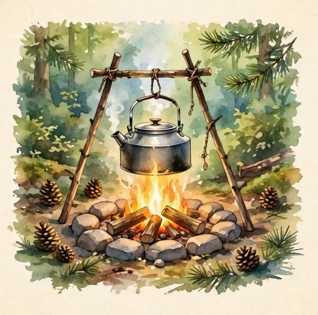
A camp kettle hanging over a small bright fire, steam rising into the morning.
Earth and dough are the two oldest materials in the register, and they are kin: both resist, both respond, both keep an exact memory of the hand. Soil gives way at its own pace and on its own terms; dough pushes back with a living elasticity, warmer than the room, changing under the palms in real time. To work either of them is to be put into a conversation that cannot be hurried past its own speed, and the register's entries from gardens and kitchens share a distinctive calm — the calm of people whose minds were being kept at the pace of their hands.
That pace turns out to be the point. Thought, left alone, tends to run at speeds attention cannot sustain — three conversations ahead, two regrets behind. The hands proceed one fold, one row, one weed at a time, and when they are occupied with materials that answer back, thought is offered honorable employment at their speed and often accepts it. Correspondents describe these hours as the ones in which their heads cleared, and the house records the phrase without asking it to mean more than it says. The mind was given a colleague. The colleague set the tempo. The tempo was keepable.
People report such hours among their most vivid and, in the same entries, their least describable, and the house finds the combination entirely trustworthy. The senses were too occupied to take notes at the time; that is why there was so much to notice. What survives for the register is usually a single sensory fact kept entire — the smell of turned earth after rain, the exact give of the dough in the last minute before it was ready — preserved like a pressed flower in place of the whole garden, and sufficient.
36The Senses Are the Oldest Register
The third hall closes where it opened: with the observation that before any written register existed — before this house, before any house — the senses were already keeping the accounts. Every vivid hour in the Keeper's book was first an entry in a much older ledger, written in temperature, weight, smell, and sound, in a hand that has never once needed to be taught. The written register is a translation of that ledger into words, undertaken late, in pencil, by lamplight — and like all translations, it knows itself to be the poorer text.
The house is unembarrassed by this. A translation is not a failure because the original was better; it is how the original gets carried into rooms the original could not enter — into this hall, into a correspondent's evening, into the hands of a visitor who came in asking what makes them feel truly alive and may leave, if the translation has done its work, with their own senses reporting a little louder than before. The map is not the coastline. The house has never claimed otherwise, and has posted the disclaimer, in effect, at its own door.
What the senses ask, in return for their lifelong accuracy, is only to be believed — their reports received as the first draft of being alive, ahead of the summaries and verdicts the mind prepares. No equipment is required and no training program is sold in this hall. The instruments are issued at birth, maintained by use, and still, in the Keeper's long experience of the correspondence, in remarkably good working order in nearly everyone who writes. The register rests on them. Where the senses report an hour as bright, the house writes it down as bright, and lets the philosophies argue it out among themselves.
37People and Aliveness
A wooden rowing boat on bright sparkling water, oars resting across the thwarts.
The fourth hall opens with the register's worst-kept secret. Many of its entries are solitary — the swim alone, the dawn alone, the bench alone — and those pages are bright. But the brightest pages in the book are crowded. Again and again, when correspondents reach for the hour they would keep if they could keep only one, the hour has other people in it: a table, a boat, a room where something was funny, a person whose arrival in the doorway reorganized the whole day. Other people are, in the plain arithmetic of the register, aliveness's most reliable weather.
The house thinks it understands why. A person at full attention doubles the resolution of the world for everyone in range; the world becomes more detailed because it is being witnessed twice, and differently. Two people attending to each other can make an entirely ordinary hour — a meal, a walk, a repair job — unforgettable, without anything in the hour that a timetable would record as an event. What happened was presence, compounded. It leaves no artifact, which is why event-based accounts of a life always underrate it, and why the register, which accounts in noticed hours, rates it so high.
The rooms that follow are about company in its working forms rather than its ceremonial ones: being met by a real attention, laughter, being needed, teaching and learning at somebody's elbow, the table at full strength, strangers briefly luminous, the friend who calls a person back to themselves. Not crowds, and not circles curated for display. The house's evidence is that aliveness among people is a by-product of use and affection, like warmth from a stove that was lit for cooking. It is what happens while people are doing something together that matters to them.
38Being Met by a Real Attention
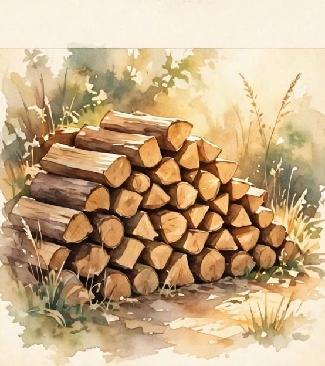
A neat stack of firewood in warm sunshine, the ends of the logs golden.
To be listened to by someone who is not, while listening, composing their reply — who is not waiting for a gap, improving the story in advance, or checking the hour against their own — is a distinct experience, and the register records it among the most powerful forms of waking there are. Under real attention, a person hears their own life at higher resolution. Thoughts that had been ambient become sayable. The speaker frequently surprises themselves, which is the surest sign in the register that the attention in the room was genuine: something new arrived, and it arrived because it was given room.
Real attention is recognizable mostly by what it refrains from doing. It does not hurry the speaker toward a point. It does not compare — silently or aloud — with the listener's own parallel experience. It does not fix, summarize, or improve. It simply stays, at full strength, on the person speaking, the way good light stays on a subject. The house notes how rare correspondents report this to be, and how disproportionate its effects are to its cost. Nothing was given but attention. The recipient describes the hour as though something had been handed over of considerable weight.
The reciprocity is the room's second finding, and it is not a small one: giving such attention is recorded as vivid just as reliably as receiving it. The listener's hour brightens alongside the speaker's — partly because attention, exercised at full strength on anything, is itself the faculty this whole hall is about, and partly because a person attending truly to another becomes privy to the world at double resolution, as the previous room described. The Vivid Desk receives letters about listening that read like letters about travel. Somebody went somewhere, entirely awake, and came back with a full register.
39Laughter That Takes the Breath
There is a laughter that interrupts breathing and thought together — the kind that has to be recovered from, in stages, with a hand held up — and for the length of it a person is nothing but alive, entirely unoccupied by any project of self. The register treats these episodes with a respect out of all proportion to their dignity, which their writers frequently apologize for. The house does not accept the apologies. Entries describing four minutes of helpless laughter at something objectively minor are, by the register's own measures, among the brightest pages in the book.
Such laughter cannot be scheduled, summoned, or purchased, and the house counts this among its virtues: it certifies, after the fact, that the hour was not performed. A person cannot laugh like that on instruction, any more than they can sneeze on instruction, and so the episode stands in the record as guaranteed-unstaged evidence — a stretch of life that was lived at full attention by the whole body, with the management temporarily locked out. Correspondents often cannot reconstruct what was funny. They can reconstruct, decades later, exactly who was there and where the light was. The register finds this distribution of memory entirely correct.
The body keeps these episodes the way it keeps the smell of rain: whole, and at full strength, and out of all proportion to their causes. The Keeper underlines the laughter entries in the register — a liberty taken with no other category — on the grounds that a house devoted to noticing aliveness should mark its most unarguable instances when they occur. Visitors sometimes laugh at the wrong moment in this room, reading. The house records that, too, and declines to regard it as an interruption of the proceedings.
40A Conversation That Could Go Anywhere
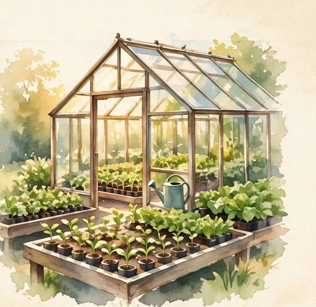
A greenhouse bright with rows of young seedlings, the glass shining in morning light.
Some conversations have no map, and the register prizes them above the well-conducted kind. They begin with the weather or the news of a neighbor and arrive, an hour later, at the questions of a life — how to spend it, what it has meant so far, what is to be done about the roof — without either speaker having steered, proposed an agenda, or at any point been able to predict the next turn. Each participant is genuinely listening, which is to say genuinely capable of being surprised, which turns out to be the entire mechanism.
Such talk is a form of travel conducted at a table or along a path, and it shares travel's essential property: the destination is discovered rather than chosen. Attention follows interest the way a path follows a stream — not the shortest way anywhere, but the way the ground actually goes. The register's correspondents describe these conversations with a distinctive gratitude and a distinctive vagueness about content, as though the words themselves had been mostly water and it was the current that mattered. Ideas arrived that neither party owned beforehand. Both parties left with more than either brought.
The conditions, insofar as the house can identify them, are unglamorous: time unguarded by the clock, devices elsewhere, and a setting that gives the hour room to widen — a table after a meal nobody is clearing, a walk long enough for the preliminary material to be exhausted and the real talk to find its way up. Such conversations cannot be forced, only hosted. The host's whole art is to prepare a place where they sometimes occur, and then not to manage what occurs there. The register's evidence is that they occur often enough, in well-kept places, to organize a life around the possibility.
41Being Needed for Something Real
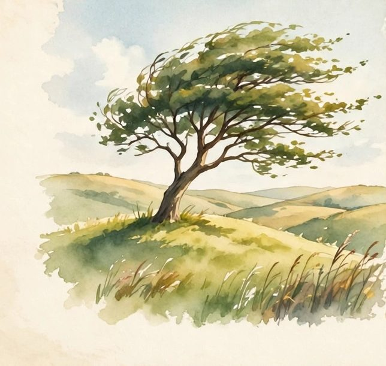
A windswept tree stands alone on a bright hilltop, bent and green and entirely unbothered.
There is a particular brightness that arrives when somebody needs you for something real — not for company, not for ceremony, but for the thing itself: the lift that needs a second pair of hands, the question only you in the room can answer, the child who wants the knot untied by you and nobody else. The register notes that the hour rarely feels important while it is happening. It feels like Tuesday. And yet, looked back on from the far side of the day, it has a color the managed hours do not have, as if the day had turned one page in bolder ink.
Being needed is different from being busy, and the house keeps the two in separate columns. Busyness can be entirely self-arranged, a furniture of tasks moved from one side of the day to the other. Need arrives from outside, uninvited, and it carries evidence with it: proof, delivered in person, that your particular hands and your particular knowledge have weight in the world. A person can doubt their own worth in the abstract for years. It is considerably harder to doubt it while holding the other end of a neighbor's fence post, with the neighbor saying, plainly, hold it there.
The keeper observes that the need does not have to be grand to do its work. The vivid hour does not ask for a rescue. It asks for a true use: the soup that needed your palate, the letter that needed your steadier hand, the afternoon that needed someone who knew where the shut-off valve was. Small needs, met fully, register in the body the way good weather does — without argument. The house records them as among the most reliable of all the small causes, precisely because nobody can schedule them, and nobody has to perform them.
42Teaching Someone a Thing You Know
To teach someone a thing you know — really know, in the hands and not just in the head — is to discover that the knowledge was asleep in you until it was asked to stand up. The register describes the moment plainly: you begin to explain the stitch, the chord, the way to judge when the pan is hot enough, and somewhere in the middle of the sentence the whole craft wakes at once, every year of it, and arranges itself in order so that another person can walk through it. Few hours feel so quietly populated. The room holds two students, and one of them is you.
The teaching does not need a classroom, and it does not need to succeed completely to count. The house has entries for afternoons where the knot still would not hold, where the dough still stuck, where the pupil went home with half the skill and all of the intention. What made those hours vivid was not the transfer but the attention: two people watching the same small thing with their whole minds, which is rarer than rubies and considerably more useful. Knowledge passed hand to hand travels at walking pace, and both walkers are awake for the whole road.
There is also this, entered in the margin of more than one page: teaching returns the teacher to their own beginning. Showing someone the first grip of the tool, you remember your own first grip of it, and the years between the two grips stand up in the light for a moment and are counted. The keeper counts this among the gentlest forms of time travel allowed in the house. No machinery is required. Only a thing known well, a person willing to learn it, and an hour in which neither of you is pretending to be somewhere else.
43Learning at Someone's Elbow
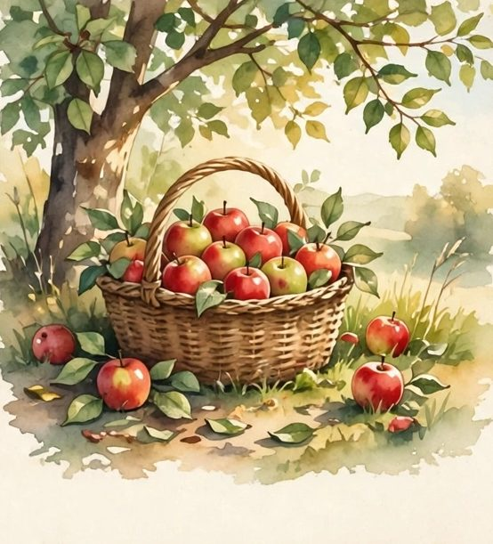
A woven basket full of apples rests under a tree, the grass around it bright with fallen light.
The other side of the bench has its own weather. To learn at someone's elbow — standing close, watching the hands rather than the instructions — is one of the oldest arrangements in the world, and the register treats it with the respect due to an elder. The knowledge does not come through the ears in this arrangement. It comes through the eyes and the shoulders: the tilt of the wrist before the cut, the pause before the knot is pulled, the small economy of a person who has done a thing ten thousand times and has stopped wasting motion on it.
What the elbow teaches that the manual cannot is permission. Watching mastery at close range, in ordinary clothes, in an ordinary kitchen or shed, the learner receives a quiet piece of news: this is a human-sized thing, done by a human-sized person, and therefore learnable by one. The vividness of the hour owes much to that news. The senses register at full strength because the body understands, before the mind has caught up, that it is being handed a future it might actually live in. Apprentices have always known this. The register merely writes it down.
The house keeps a fond note about the slowness of it. Elbow learning cannot be hurried, because the hands being watched will not perform at double speed for anyone's convenience. So the learner stands, and waits, and watches the kettle of the craft come to its own boil. In an age of summaries the slowness itself is a kind of weather on the skin — proof that the hour is real and unrepeatable. You leave with less than the master knows and more than any description could have carried, and your hands are already slightly different than when you arrived.
44The Table at Full Strength
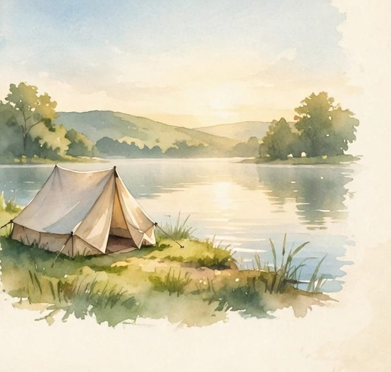
A small tent is pitched beside a still lake under a bright clear dawn, its guy ropes taut in the first light.
Every household knows the difference between a table that is fed and a table that is at full strength. The food may be identical. What changes is the attendance: everyone present has actually arrived, the phones are face down or in another room entirely, the conversation is one conversation and it belongs to everybody. The register describes such evenings the way sailors describe a fair wind — not rare enough to be miraculous, not common enough to be assumed. When the table is at full strength, the hour lengthens without anyone touching the clock.
The keeper has made a small study of what assembles it, and the findings are almost disappointing in their plainness. Full strength is not produced by the menu, though good bread has never hurt it. It is produced by the absence of exits: nobody is half gone into a screen, a grievance, or a plan for later. Each person at the table is, for that hour, exactly where the rest of them can reach them. Aliveness, the house notes, is partly a matter of reachability, and the table is where the measurement is easiest to take.
There is a sound the full-strength table makes, and the register refuses to describe it beyond saying that it carries through walls. Houses know it. Streets know it. It is the sound of people who are not performing enjoyment but having it, in the working tense, with their sleeves rolled. The keeper's only counsel on the subject is logistical: it cannot be summoned, but the chairs can be set out. Put the bread in the middle, let the hour be unhurried, and attend. More tables reach full strength by accident, on plain food, than by design on feasts.
45Strangers, Briefly Luminous
The register keeps a small, bright chapter for strangers: the woman on the train who described her whole orchard in four stops, the man at the market who insisted you smell the melon properly before judging it, the fellow traveler who held the map upside down with total confidence and was wrong in a way that made the whole carriage kind. These encounters have a quality the planned ones rarely match. Nothing is owed, nothing is expected to continue, and so the attention between two people can be complete in a way that longer relationships, freighted with history, sometimes forget how to be.
Briefly luminous is the house's phrase, and the brevity is load-bearing. A stranger can be met purely in the present tense — no file, no grievances, no role to maintain — and the present tense, the keeper notes, is where aliveness keeps its office. The exchange ends at the station or the stall, and that is not its failure but its form, like a song that is the right length. Trying to extend every luminous stranger into a friendship is a way of refusing the gift in the shape it was given.
What remains afterward is disproportionate, and the house has stopped being surprised by it. Years later, the melon man's standards still govern your shopping. The orchard woman's four stops still mark a line on the map of your memory more firmly than whole holidays do. The register draws its usual modest conclusion: people do not need to be permanent to be vivid, and an hour — even twenty minutes — held at full attention between two strangers can outweigh a month of nodding at acquaintances. The tide comes in where it pleases.
The Vivid Desk
One desk receives all correspondence for this house — questions, corrections, and word of any hour a visitor felt truly alive: what woke it, how long it lasted, what the hands were doing. It is read in the order it arrives, and entered in the register of vivid hours.
46The Friend Who Calls You Back to Yourself
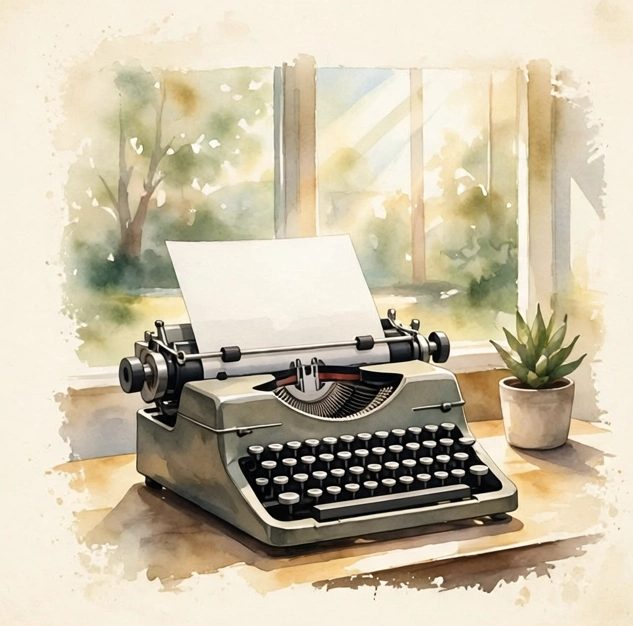
A typewriter waits on a desk beside a bright window, a blank sheet standing ready in it.
Every life, if it is fortunate, contains one person with a particular gift: they can hear, in your voice, the exact distance between you and yourself. The register calls this friend the caller-back, and it records their interventions with gratitude and a little awe. The call is rarely dramatic. It is a sentence at the right moment — you do not sound like you; when did you last sleep properly; that is their sentence, not yours — and something in the chest, which had been quietly drifting, comes back to its mooring with an almost audible click.
What makes the hour vivid is not comfort, exactly. Being called back to yourself can sting, the way cold water stings, and it wakes in the same way. The friend is not offering escape from your life but delivery back into it, first class, with your own name on the ticket. The house notes that this is a rarer form of love than agreement. Agreement will nod along while you drift a mile offshore. The caller-back stands on the dock of who you actually are and refuses, politely and completely, to wave at the wrong ship.
The keeper's entry on the subject ends with an observation about maintenance. Caller-back friends are not found by advertisement; they are the long dividend of having been, oneself, reachable and honest over years. And the gift, once received, tends to propagate: a person who has been called back learns the sound of the call, and one day finds themselves making it, at the right moment, for someone else. The register counts that propagation among the surest signs that an hour of aliveness has done its work in the world — it went on without you, in other voices.
47Love, in Its Working Clothes
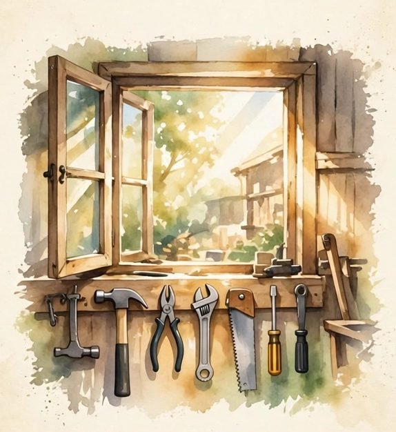
Hand tools hang in a workshop window in the sunshine, each in its place, handles worn smooth.
The house distrusts love in its evening dress a little — not because the dress is false, but because the register's business is with the hours that repeat. Love in its working clothes is the form that shows up on schedule: the tea made the way they like it without being asked, the lift to the station in the rain, the form filled in together at the kitchen table, the shoulder during the film both have seen before. None of it photographs well. All of it, the keeper records, has a vividness that outlasts fireworks, because it is aliveness with its sleeves rolled and its boots on.
Working clothes are not a lesser costume; they are the evidence. Anyone can feel intensely for an hour in good weather. The working form of love is a technology for remaining present across bad weather, tired weather, weather that arrives on a weekday with paperwork. And there is a sensation that belongs to it alone, which the register has tried more than once to name: the sensation of being teamed. Two people moving around a small kitchen in a practiced wordlessness have something that orchestras rehearse for years to imitate.
If a visitor asks where aliveness hides in a long love, the house does not point at anniversaries. It points at the ordinary transfers: the held ladder, the listened-to account of the day, the last slice left without negotiation. These are the hours when the heart's attendance record fills up. Love in working clothes does not announce itself, and the keeper is content to leave it unannounced — content, even, to note that the people inside it often realize only late, and with some astonishment, that they have been vividly alive together all along, in overalls.
48Alive Together, Quieter Than Alone Sometimes
There is a form of togetherness the house logs separately because it is so easily mistaken for nothing happening: two people in the same room, each inside their own task, the silence unbroken and entirely unstrained. One reads; one mends; the kettle ticks as it cools. The register insists, against all appearances, that these are among the most alive hours a household produces — aliveness at its lowest volume and some of its highest proof, since the quiet is not empty but occupied, the way a harbor is occupied by resting boats.
Alone, a person must generate the whole weather of a room. Together in this quiet way, the weather is shared, and the sharing itself registers somewhere below thought: another breathing presence, another person's small sounds of work, the occasional sentence that arrives like a bird landing and leaves again without ceremony. The body keeps score of such rooms. People return from them steadier than from excitement. The keeper, who is fond of tides, notes that this is aliveness in its neap form — no waves to speak of, and the whole sea quietly up to the doorstep.
It cannot be scheduled, which the house files under mercies. Announce a companionable silence and it becomes an appointment, and appointments have agendas, and the hour dies of them. It grows instead in the cracks of shared life: after the meal is cleared, on the long drive, in the last hour of the evening when neither person chooses the stimulation of a screen over the low light of each other's company. The register's whole doctrine on the subject fits in one line, and the keeper leaves it as the final word of the hall: some hours are alive the way deep water is alive, by being still together.
49The Work That Wakes Me
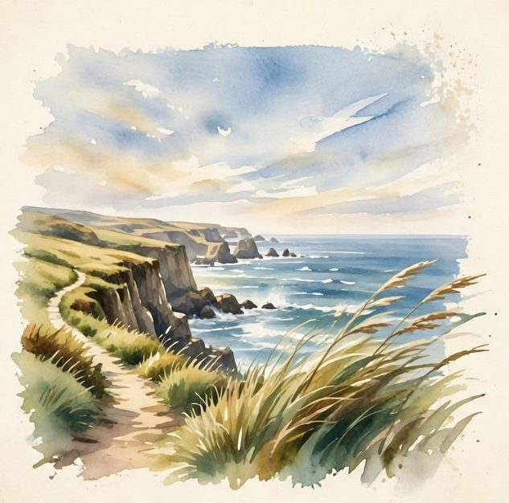
A coastal cliff path runs on in bright wind under a big sky, gulls turning far below.
Every person has work that wakes them and work that merely employs them, and the register is careful to say the two can be the same job on different days. The waking kind announces itself in the body before the mind has voted: the shoulders drop into their working position, the breath settles, the hour stops being a container to get through and becomes a material to shape. People who have felt it once in a trade tend to organize their lives, sometimes at great inconvenience, around feeling it again. The house does not blame them. It was built, in large part, by such people.
What wakes is rarely the prestige of the work. The register's pages are full of anonymous vividness: the third hour of a well-laid hedge, a spreadsheet reconciled to the last cent by a clerk nobody will thank, a floor mopped in an empty corridor by someone who had decided, privately, to mop it beautifully. The waking seems to live not in the task but in the point where the task and the person are exactly matched for a while — difficulty and ability in the same room, introducing themselves. Below that point is boredom; above it, static. At it, the hour lights.
The keeper is often asked whether a person should abandon unwaking work, and the house's answer is characteristically unhelpful to slogans: sometimes, and sometimes the work wakes when it is done more completely. The register has entries in both columns. A task performed at full attention frequently turns out to have been alive all along, only unobserved, like a garden found already blooming behind a house you have lived in for years. Before changing the work, the house suggests changing the attendance. Then, if it still sleeps, change the work with a clear conscience.
50Making a Thing That Was Not There
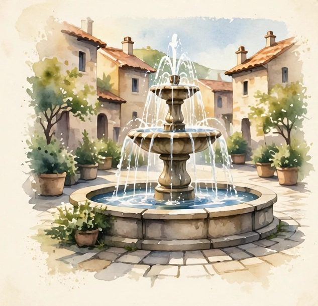
A fountain splashes in a sunny village square, its water bright over old stone.
To make a thing that was not there is one of the reliable miracles, and the register treats it with the plainness it deserves. In the morning: flour, or boards, or a blank field in a notebook, or silence where a tune will be. By evening: bread, a gate, a paragraph, a melody somebody is humming while they wash the pan it rose in. The maker's aliveness in such hours has a particular signature the keeper has learned to recognize — a tiredness with daylight in it, and a tendency to touch the finished thing once more than necessary, the way one pats a good dog.
The made thing does not have to be good by the world's measure to do its work in the maker. The house is explicit about this, because the world's measure has ruined more vivid hours than idleness ever has. A lopsided stool that holds, a garden bed that yields six radishes and a principle, a song that only the kitchen will ever hear — each of these is a complete event in the register, entered without apology. The aliveness is in the crossing: from nothing arranged to something arranged, by these hands, today. The size of the something is a detail.
There is also the matter of the evidence. Feelings fade and even memories edit themselves, but the made thing stands in the corner being factual. On grey days the maker can look at it and receive a small, unarguable report: I was here; the hour counted; matter agreed to be rearranged. The keeper believes this is why making belongs beside eating and sleeping in the house's book of necessities. We are creatures who need proof of our own passage, and the kindest proof is a thing that now exists because an ordinary hour was fully attended.
51Skill at Its Stretching Point
There is a narrow ledge in every craft where the work gets interesting, and the register has mapped it from a hundred reports. Below the ledge, the task is already learned and the hands could do it in a doze; the hour passes, but it passes unrecorded. Above the ledge, the task is beyond the present reach and the hour fills with flailing. On the ledge itself — where the skill must stretch to meet the work, and the stretch can be felt, like a muscle at its honest limit — the senses report at full strength and time behaves the way it does in childhood. The house calls this the stretching point, and keeps it circled.
It is not comfort, and the keeper is careful never to sell it as comfort. The stretching point is effortful, occasionally embarrassing, and regularly punctuated by failure in small denominations. But its failures are informative rather than shaming, because the ledge is exactly where a person can feel the boundary of themselves move — a quarter inch, on a good day, but moved. The register notes that people will cross whole careers, whole decades, for that quarter inch, and that hobbies make more sense once you understand they are ledges people build for themselves when their work stops providing one.
Finding it cannot be done entirely in advance, which is part of its nature. The ledge is located by attempts: the slightly harder piece, the slightly deeper water, the conversation in the new language attempted one sentence beyond safety. The house's only advice is about dosage. A life spent entirely on the ledge would be as grey, in its way, as a life spent entirely below it. The vivid hour is a visitor, not a landlord. Visit the ledge often enough to remember the address; then come down, eat something, and let the stretch settle into strength.
52The Hour That Disappears
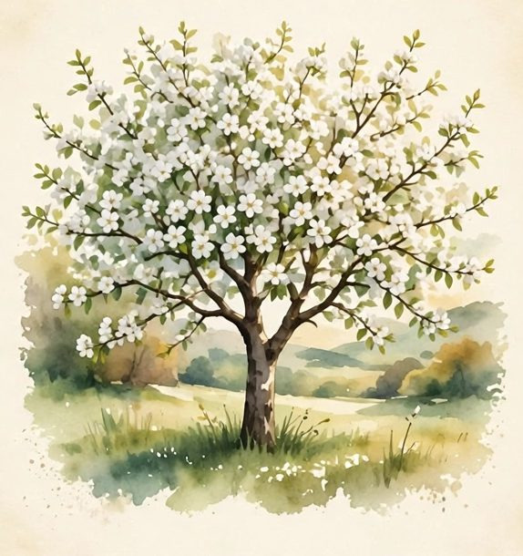
A pear tree stands covered in white blossom, petals loose in the bright air.
Everyone who works with their full attention knows the hour that disappears. It is set down in the register without mystery, though no one has ever improved on describing its edges: you look up from the bench, or the page, or the garden row, and the light has changed entirely; the tea is cold; two hours have been spent the way a swimmer spends a held breath, in one continuous act. The keeper notes that this is the only form of lost time the house has never heard anyone mourn. The other kinds are mourned constantly. This one is described the way people describe good weather they happened to be out in.
The disappearing hour has conditions, and the register has collected them the way it collects everything: by listening. The work must be whole enough to hold a person — not a fragment of a fragment, handed off every four minutes to the next interruption. The person's skill must be near the work's difficulty, that ledge the previous rooms describe. And the room, literal or otherwise, must briefly stop asking for anything else. Where these three meet, the hour folds. Where they do not, the hour drags its furniture audibly across the whole afternoon, and both kinds of hour are exactly sixty minutes long, which the keeper finds an enduring scandal of arithmetic.
The house prescribes nothing here either, beyond a mild protectiveness. A person who notices which work swallows hours whole has been handed a piece of self-knowledge worth more than most advice: the shape of their own attention, drawn by its happiest use. The register suggests treating that knowledge as one treats a good well — not draining it daily, not fencing it off, but knowing where it is. Some lives are reorganized, quietly and completely, around a single noticed hour. The house has the records, and they are among its brightest pages.
53Tired in the Good Way
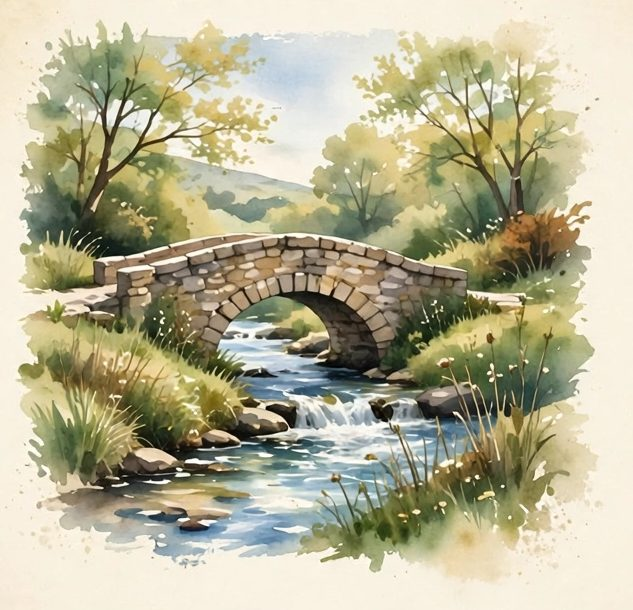
A small stone bridge crosses a bright stream, its arch doubled in the clear water beneath.
Tiredness comes in two weathers, and the body can tell them apart blindfolded, though the mind often cannot. There is the tiredness of the dragged hour — grey, irritable, oddly heavier than the work that caused it. And there is the tiredness the register calls the good way: the clean ache of used muscles, the mind gone quiet the way a pond goes quiet after swimming, an appetite for dinner and for sleep arriving together like old friends who have agreed about everything. A person can be more exhausted in the second weather than the first and would not trade a minute of it.
The good tiredness is nearly always earned in company with attention. It is the receipt for hours spent at full strength — the hedge finished, the boat rowed across and back, the rehearsal that finally held together — and it has the odd property of restoring while it spends. The keeper has watched it arrive in the house's own workers for years: they come in emptied and somehow more themselves than at breakfast, as if the day had been a tight garment finally worn into shape. By contrast, the grey tiredness restores nothing; a night's sleep merely resets it to zero, like a debt refinanced.
The house therefore keeps tiredness in its register of evidences, filed between weather and bread. If a life produces the good kind regularly, something in its arrangement is right, whatever the account books say. If it produces only the grey kind, the house offers its usual unglamorous thought: it may not be rest that is missing, but a use for one's strength that the strength itself recognizes. Even a single weekly hour can change the report. The body is an honest clerk. It writes down, every night, exactly what the day was worth, in a script of aches and appetites.
54A Problem That Fights Back Fairly
The register has a soft spot, which it does not bother to hide, for problems that fight back fairly. Such a problem has rules and keeps them: the joint that will not close until the angle is truly right, the engine whose fault is real and findable, the translation whose sentence resists until it suddenly, honorably, yields. Against a fair problem, a person's whole intelligence can be deployed without reservation, and the contest itself — win or lose by evening — is a vivid hour in good standing. The house has recorded losing days in this hall with as much respect as winning ones.
What makes a problem fair is that it is indifferent rather than hostile. It does not move the goalposts, take offense, or require flattery; it simply stands there being exactly as difficult as it is. People who work with materials know this indifference as a kind of honesty, and many prefer it to human weather. Wood does not pretend the saw was sharp. The register notes, too, that fair problems give a rare gift: unambiguous feedback. The shelf fits or it does not. In a life full of maybes, a clean no from a piece of oak can feel almost like friendship.
The unfair problems — the shifting requirement, the mood disguised as an objection, the system that punishes the correct action — drain the same hours without returning any light, and the house does not pretend otherwise. Its counsel is plainspoken, in its own way: when work consistently dulls, check first whether the problems have stopped fighting fair. Sometimes the remedy is a better brief, a clearer edge, a smaller arena. And sometimes a person discovers that what they loved was never the trade at all, but its honest resistance — and goes looking, quite sensibly, for a new opponent of the honorable kind.
55The Bench at Evening, Cleared
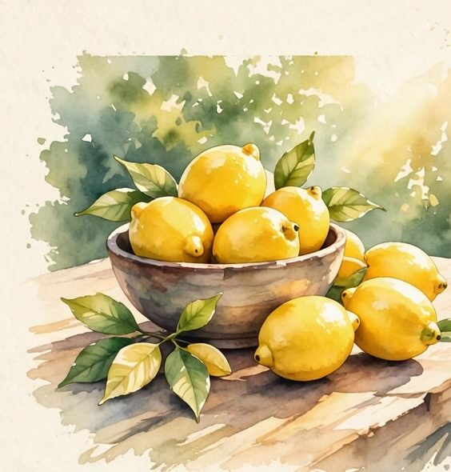
A wooden table holds a bowl of bright lemons in full sunshine, shadows sharp and clean.
The bench at evening, cleared, is one of the house's quiet ceremonies, and the register gives it a room of its own out of respect for how much it reports. The day's tools are wiped and racked; the offcuts are swept; the work, finished or not, is covered or squared away until morning. Nothing about the ceremony is productive in the narrow sense — no thing is made during it — and yet workers in every trade describe the cleared bench with the same small satisfaction, as if the day itself had been signed. An ending, attended to, is part of the work's aliveness.
The keeper believes the ceremony works because it converts a stop into a conclusion. Hours that are merely abandoned leak; their unfinishedness follows a person to the table and into the first hour of sleep. Hours that are closed — tools down in order, the state of the work noted, tomorrow's first move left visible like a bookmark — those hours stay in the workshop where they belong, and the evening is free to be an evening. The register has a phrase for the difference: the cleared bench is how the hands tell the mind that the tide has gone out on purpose.
It need not be a bench. The cook's wiped counter, the writer's saved page and closed notebook, the gardener's tools in their bucket by the door — the form is portable because it is not really about furniture. It is about the last five minutes of attention given to the day instead of taken from it. The house recommends the ceremony to visitors with unusual plainness, one of the few recommendations it allows itself: it costs nothing, it can be done badly and still work, and it makes the next vivid hour easier to find, because the bench is already clear.
56Apprentice and Master in One Body
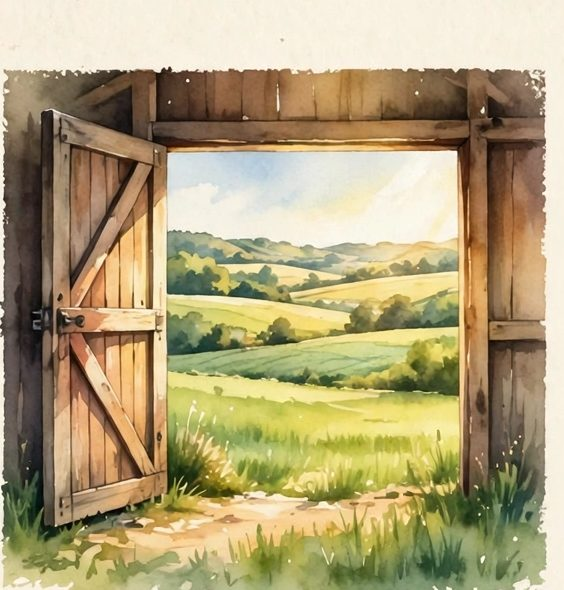
A wide barn door stands open onto bright green fields, light falling in a long band across the floor.
In any long practice there comes a stage the register describes with some wonder: the apprentice and the master take up residence in the same body. The master is present in the judgment — the eye that sees the line is wrong before the hand has finished drawing it. The apprentice is present in the appetite — the willingness to be bad at the new thing, to ask the beginner's question in a room where one is supposed to know. Most people house one or the other at a time, masterful and bored, or eager and lost. The hours when both are home are among the most vivid the house records.
The arrangement explains a common mystery: why the very skilled are often the most teachable people in a room. They have not outgrown the apprentice; they have promoted him to permanent staff. Watch an old joiner encounter a joint he has never cut and you will see the whole household at work — the master's hands setting up, the apprentice's eyes wide at the front of the head. Aliveness, the keeper writes, is partly the refusal to let either resident evict the other. Mastery without appetite is a museum. Appetite without mastery is weather. Together, they are a workshop with the lamps on.
For the visitor who feels only one resident at home, the house offers its usual unhurried note. The master is grown by finishing things and standing by them. The apprentice is kept by deliberately beginning things at which one will, for a while, be the slowest person present. Neither growth is comfortable the whole way, and both are cheaper than they look from outside. The register's interest is not in anyone's rank. It is in the lit windows — the sign, visible from the road, that both halves of the house are occupied and the work is going on.
57Work That Feeds People
Of all the work in the register, the kind that feeds people holds a small, permanent distinction, and the house is not embarrassed to say so. The baker at four in the morning, the cook in the school kitchen, the farmer walking the rows in the first light, the parent at the stove at the end of a double shift — their vivid hours have a flavor the others do not, because the work's destination is a body, and usually a body they know. The thing made will become somebody's strength by evening. The register finds that this closes a circuit that other work leaves open.
Feeding work is also unusually honest about its results. The bread rises or it does not; the soup wants salt and says so to the first spoon; the harvest is in the basket, in plain sight, at the end of the row. The house has noticed that people drawn to feeding trades often mention this plainness with relief — in a world of abstract outcomes, dinner is not abstract. And the feedback arrives in the best form feedback can take: faces at a table, going quiet in the specific way that means attention has been entirely captured by pleasure.
The keeper is careful, here as everywhere, not to issue rankings; a life is not graded. But the chapter ends with an observation any visitor can test: to cook one real meal for people, with one's whole attention, is among the most dependable ways ever recorded of spending an hour at full tide. Civilization, such as it is, has been running on this discovery since the first fire. The house merely keeps the register open at the page, and notes that the page is worn smoother than any other in the book, from being turned so often.
58The Signature No One Sees
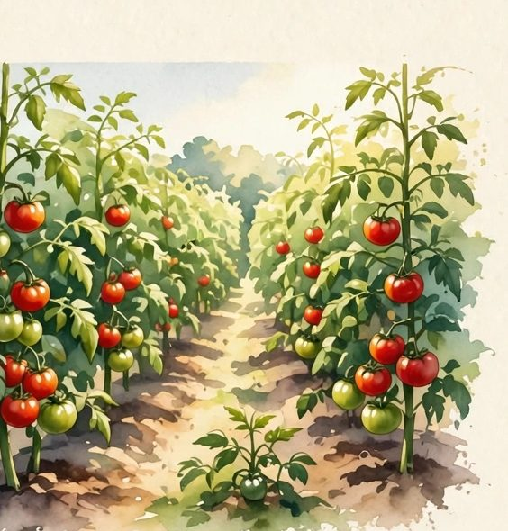
Rows of tomato plants glow in bright sun, tied in neat lines along their strings.
Every honest trade has a signature no one sees, and the register keeps a fond room for it. It is the part of the work done past the point where any inspector, customer, or camera will ever reach: the inside of the joint fitted as carefully as the face, the splice soldered clean where the wall will cover it forever, the garden bed edged true at the back where only the gardener walks. No one will know. That is precisely the arrangement. The person who did the work will know, and will walk past the hidden place for years in a private state of grace about it.
The house understands this signature as a form of self-address. It is a message left by the worker for the worker — the only audience guaranteed to receive it. And it changes the texture of the hours around it: work done to that standard cannot be hurried past itself, so the whole day slows to the pace of care, and slowness at full attention is, by the doctrine of this house, aliveness in its working clothes. People who sign their hidden work are rarely bored at the bench. They are in conversation with someone whose opinion they respect.
There is a cost, and the register does not hide it: the unseen signature is unpaid, unthanked, and occasionally unwise by the ledger's lights. The keeper's judgment, entered without heat, is that the ledger is not the only book. The signature is not for the world's accounting; it is how a craftsperson keeps the work worth waking for. Lose it, and the same tasks go gradually flat, one shortcut at a time, until the bench is only a bench. Keep it, and even maintenance glows faintly, like a lamp left on in a room nobody else enters.
59Making Versus Maintaining
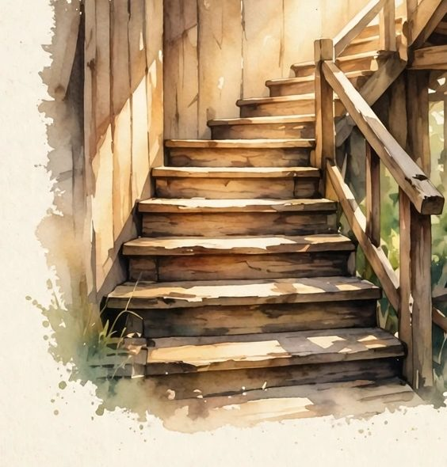
A well-worn wooden staircase climbs through warm bright light, its steps polished by years of feet.
The register draws a line down one of its central pages and writes making on one side and maintaining on the other, then spends the whole room complicating its own diagram, which is the house's way. Making gets the ceremonies: beginnings, first cuts, unveilings. Maintaining gets the Tuesdays: sharpening, oiling, repointing, backing up, sweeping the same floor into the same corner of clean. The vivid hours, however, refuse to respect the line. Some of the brightest entries in the book are pure maintenance, done at full attention by people who had decided that keeping a thing alive is a complete art and not a prelude to one.
The difference, where it exists, is in the direction of the gaze. Making looks at what is not yet there. Maintaining looks at what is there and asks what it needs — a closer looking, in some ways, because the thing maintained has a history and the maintainer is part of it. The house notes that long loves, long gardens, long workshops, and long friendships all run on this second gaze, and that a civilization which only celebrates the makers will find its roofs quietly falling in. The mop and the oilcan have saved more beauty than the ribbon and the scissors ever founded.
For the visitor, the practical entry is short. If your hours have gone dull, the cause may not be that you only maintain; it may be that you maintain at half attention, saving yourself for a making that the calendar keeps moving to next season. The register suggests an experiment in the house's usual spirit: maintain one thing — one tool, one bed, one friendship — at full strength for a week, as if it were an unveiling. Report back to no one. The hands will have written their own account by Friday, and the keeper would bet on its contents.
60What the Hands Report at Night
The last room of the hall belongs to the night shift of the register: what the hands report when the day's work is done and they are finally still. The report is not written in words. It arrives as the particular ache in the thumb that was earned honestly, the smell of wood or earth or onion that no washing quite removes before bed, the small stinging map of the day left in the palms. The keeper claims the hands file the truest account of a life, because they cannot be edited. They say what was actually done, at what attention, and whether it was worth the doing.
A night when the hands report nothing is noticed in the house, and noted without alarm — a drift can be corrected, as later rooms describe. But a run of such nights is the register's quietest signal: the days are being spent somewhere the body is not invited, or invited only as furniture. The remedy is almost never grand. The entries that turn such a run around begin embarrassingly small: dough kneaded for one loaf, one drawer planed to fit, twenty minutes with the hands in garden soil while the light lasts. The tide, the house insists, returns to hands that are in the water.
So the hall closes with the hands resting, palms up, in the lamplight — the house's image of an honest day ending. Tomorrow they will be asked for everything again: skilled things, heavy things, tender things. Tonight their report is the verdict that matters, and it is a kind one more often than people fear. If the ache is clean and the tiredness is the good kind, the day is entered in the book as lived. The register is closed, the lamp is turned down, and the keeper walks home through the dark with his own hands swinging empty and full at once.
The Vivid Desk
One desk receives all correspondence for this house — questions, corrections, and word of any hour a visitor felt truly alive: what woke it, how long it lasted, what the hands were doing. It is read in the order it arrives, and entered in the register of vivid hours.
61What Dulls It
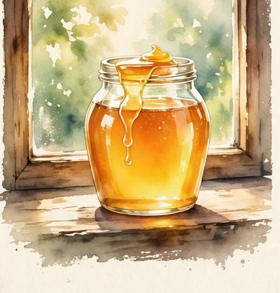
A jar of golden honey glows on a windowsill, the morning coming through it like amber.
Every tide has its going out, and the house opens this hall without any of the alarm that usually attends the subject. What dulls aliveness is rarely dramatic. Nothing breaks; nothing is stolen in the night. A person simply notices, one ordinary afternoon, that the colors have been arriving slightly muted for a while — that the hours have a practiced, upholstered quality, as if the day were being lived from the next room. The register's first entry on the matter is a reassurance, and it is meant: this is weather, not verdict. Weather is the house's whole subject, and weather changes.
Dulling has this in common with rust and with sleep: it is a process, not an event, and it prefers unobserved corners. It does not announce itself at the door like grief or joy. It accumulates in the small surrenders of attention — the meal eaten over a feed, the walk taken inside a podcast about somewhere else, the evening handed over, entire, to a light that asks nothing. None of these is a sin, and the house keeps no list of sins. Each is only an hour in which the senses were stood down from their posts, and a stood-down watch, repeated, becomes a habit of the garrison.
The keeper insists on one distinction before the hall proceeds, because everything gentler in the later rooms depends on it. What is dulled is the noticing, not the life. The vivid hours did not stop occurring during the grey stretch; they occurred unregistered, like weather over an empty house. This is why the remedy, when it comes, so often looks like nothing more than a return of attention to rooms that were never actually bare. The tide had not left the shore. The watcher had only gone indoors for a season, which is a thing watchers are allowed to do.
62The Hours on Autopilot
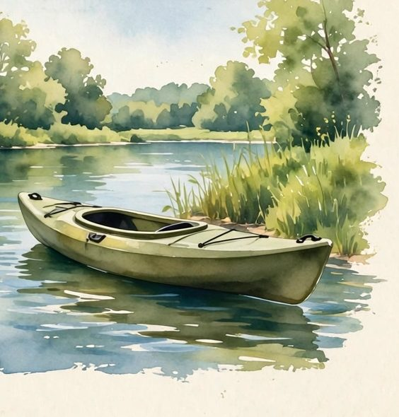
A kayak rests on bright water beside a green shore, its paddle laid quiet across it.
Autopilot is a mercy the body grants for familiar roads, and the house begins there, in fairness. A creature that had to attend fully to every stair and spoon would be exhausted by breakfast. The dulling begins only when the mercy is promoted — when whole territories of a life are handed over to the machinery: the commute, the errands, the meals, the evenings, each run by script while the person who owns the life is elsewhere, planning, worrying, or simply absent in the specific way of someone scrolling through their own day at one remove. The register's image for it is a lamp carried through a house by someone looking at the lamp.
The cost is quiet and cumulative, which is why the house treats the subject gently. An hour on autopilot is not wasted in the way an hour of pain is wasted; it is simply unrecorded. Ten thousand such hours make a decade that feels, in retrospect, oddly short — not because little happened, but because nobody was fully present to sign for the deliveries. People describe these stretches with a puzzled mildness: the years were fine, they say, and cannot say where they went. The register can. They went where all unsigned-for hours go, into the general weather of a life, unremembered because unobserved.
The way back is not a campaign, and the house would be sorry to hear it described as one. Autopilot yields to exactly the force that created it, applied in reverse: repetition, in small doses, of attention. One errand walked with the senses on duty. One familiar road actually seen, once, as if it had been recommended. The machinery is not the enemy — it will retake the stairs and the spoons by tomorrow, and rightly. The keeper's whole teaching on the subject is a matter of borders: let autopilot keep the corridors, by all means. Keep it out of the rooms where the life is actually happening.
63The Screen's Even Light
The screen has a light unlike any other in the house's register, and the entry about it is written without rancor, at a desk that owns one. Sunlight arrives at angles and changes its mind hourly; firelight flickers and must be tended; even lamplight pools and leaves the corners dark. The screen's light is even, patient, and identical at noon and midnight, and it falls on the face of a person who may sit inside it for hours without their body once being asked a question. The register notes the obvious consequence: a light that never changes tells the senses there is nothing to notice, and the senses, obligingly, stand down.
What the light carries matters less, in the house's accounting, than what it replaces. The hours given to the screen are rarely its worst hours; the thing is frequently beautiful, often informative, occasionally the best available company. The dulling is actuarial rather than moral. Each hour spent in the even light is an hour in which weather did not touch the skin, distance did not enter the legs, and the world's smells — rain coming, bread somewhere, the green smell of a cut hedge — went unsampled. A person can be excellently entertained for years and quietly under-weathered, like a plant grown large and pale in a bright, windowless room.
The house's counsel is proportion, offered in its usual plain coin. It does not ask anyone to smash the lamp. It notes that the even light is best used the way strong tea is best used — deliberately, in cups, at chosen hours — and that the rest of the day belongs by right to the angled, flickering, inconvenient lights: morning through a real window, dusk on a real street, firelight or its nearest available cousin. The eyes were built by the older lights, and they report most vividly in them. The register simply records the preference, and leaves the curtains where the visitor left them.
64Routine Without Attention
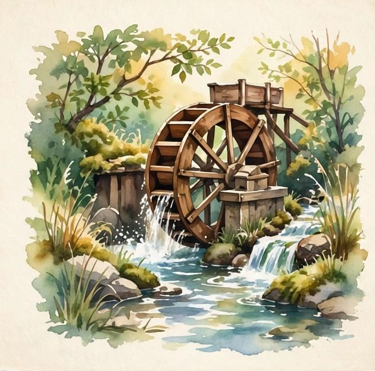
A waterwheel turns slowly beside a bright mill stream, patient in its endless circle.
Routine is the trellis of a life, and the house will hear nothing against trellises. It is attention, not repetition, that routine can lose. The same walk, the same bench, the same sequence of cups and keys — repeated with the senses on duty, these are rituals, and people have crossed deserts to keep them. Repeated with the senses stood down, the identical sequence becomes a groove, and the day slides along it without friction and without news. The register's finding is almost offensively simple: it is not the sameness that dulls. People are dulled by sameness only when they stop expecting the same thing to be different today, as it always, slightly, is.
There is a small test the keeper uses, so small it can be run during the routine itself. Somewhere in the repeated hour, ask what is different this time: the light an inch further along the wall, the bird not present yesterday, the knee reporting a new opinion, the coffee from a different bag of beans. If the question returns answers, the routine is alive and merely quiet. If the question itself feels pointless — if the hour genuinely offers nothing to the asking — then the groove has deepened into something the later rooms will address, gently, as drift. The distinction matters because the remedies differ by an order of magnitude.
For the groove, the house prescribes variation so modest it barely qualifies as advice: the same walk, opposite direction; the same bench, opposite end; the tea at the window instead of the desk. Routine resists drama and yields to nudges. A trellis does not care which way the vine is trained, only that something living is climbing it. And the register closes the room with its customary fairness: some of the most vivid hours ever recorded in the book wore the exact uniform of the dull ones, indistinguishable from outside, differing only in that somebody inside the hour was awake.
65Waiting to Feel Alive Later
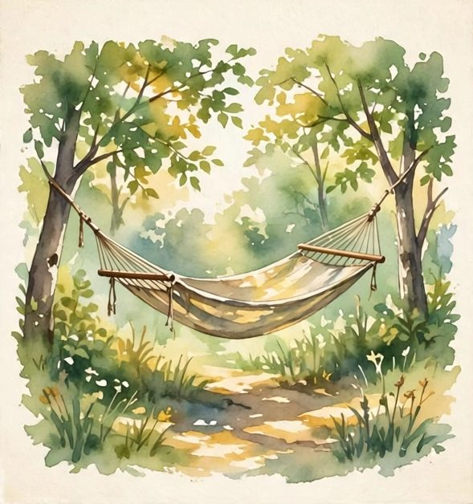
A hammock hangs between two trees in dappled light, empty and patient in the bright afternoon.
There is a sentence the register hears in many forms, and it is always scheduled for later: when the work eases, when the money settles, when the children are older, when the house is done — then the vivid life will commence. The house records the sentence without mockery, because it is usually spoken by tired people in good faith, and because the logic of it is genuinely hard to fault from inside a hard season. Postponement is often sanity. The dulling enters only when later becomes a permanent address — when every season, examined, turns out to be the one just before the season in which aliveness will be permitted to begin.
The arithmetic of the postponed life has a flaw the keeper points out with a pencil. Aliveness is not a crop that waits in the field; it is closer to a muscle or a language, kept by use in small denominations. The person who defers all vivid hours for a decade does not arrive at the free decade with the capacity stored and gleaming. They arrive out of practice, with the senses' reporting grown faint from disuse, and must learn — at sixty, say, but the register has entries at every age — the trade of noticing that a daily five minutes would have kept oiled all along. Nothing is lost irretrievably. But the tuition is higher later, and the house is in favor of discounts.
The gentlest entry in this room concerns scale. The postponed life is usually postponed in its grand forms — the voyage, the masterpiece, the great relocation — and the deferral of the grand quietly licenses the deferral of the small, as if a walk at full attention were also scheduled for after the renovation. It is not. The small forms are available in every season, including the hard ones, perhaps especially in the hard ones. The house's whole doctrine fits here in one line: do not wait to feel alive later in the large way, when the small way is standing at the door today, unpostponable, asking for ten minutes.
66The Postponed Life
Behind the postponed hours stands the postponed life, and the house gives it a room of its own because it is less a habit than an address — a place a person can live for years, with furniture. Its rooms are furnished with intentions: the instrument in its case, the language books in their stack, the good boots broken in for a journey perpetually in preparation. Nothing in the arrangement is foolish, and the keeper is careful to say so. The postponed life is usually built by a person who loves the unlived things sincerely. That is what makes the address so comfortable to remain at, and so quiet in its costs.
The cost, as the register reckons it, is not the unlived things themselves. A life cannot contain everything, and the house keeps a serene page about the dignity of the unchosen. The cost is the low, continuous background hum of a promise being kept at arm's length — the way each ordinary day, however decent, is quietly audited against the scheduled one and found preliminary. Aliveness requires a certain loyalty to the hour in hand; the postponed life is a standing disloyalty, gentle and well-organized, to every hour that is not the appointed one. People do not notice the hum for years. Then a song, or a smell of rain, switches it off for a moment, and the silence is startling.
The way out, where the house has seen one, has never once been the sudden living of the whole postponed plan. It has been a smuggling: one item at a time carried across the border into the present tense. The instrument out of its case for the length of one tune. The language spoken badly for three words at breakfast. The boots walked to the end of the local path and back. The postponed life, audited this way, often turns out to contain far less actual postponement than its reputation suggested — much of it was simply the present, waiting to be signed for. The register records the discovery, usually, in brighter ink.
67Comfort That Asks Nothing
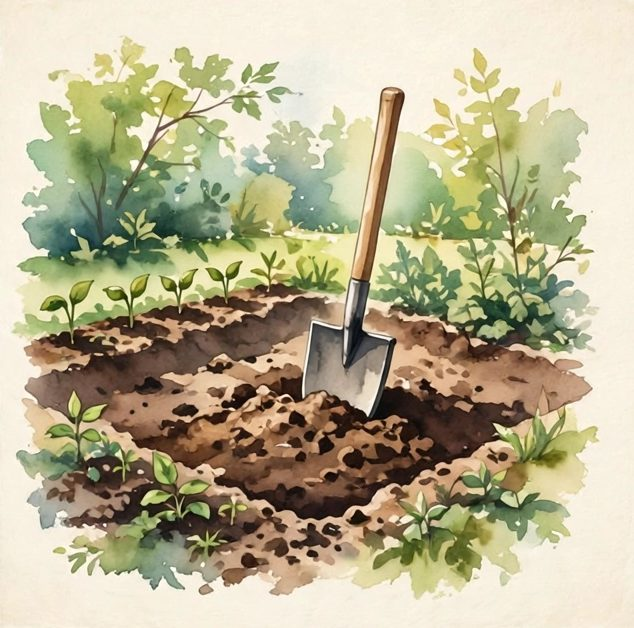
A freshly dug garden bed lies open in the sun, a spade standing upright in the turned soil.
Comfort is a good servant of aliveness and a poor substitute for it, and the house opens the room with that fairness recorded. Warmth, softness, safety, the kettle that boils itself — these are not the enemies of the vivid hour; half the register's brightest entries happen in armchairs. The dulling begins at a specific and identifiable point: when comfort stops being a base camp and becomes a policy, when the arrangement of a life quietly optimizes for never being asked anything — not cold, not effort, not surprise, not the small risk of being rained on between the house and the gate. A life can be perfectly upholstered and perfectly unvisited by weather.
The body keeps the accounts here too, in its candid way. Muscles that are never asked forget the asking is possible, and report the world smaller. Appetites that are always answered instantly lose the bright interval of hunger that makes eating an event rather than a refill. Even temperature: a person who has not been properly cold in a year has mislaid one of the senses' oldest reference points, against which warmth itself is measured. The register does not romanticize discomfort — it has read the winter entries too carefully for that. It only notes that aliveness seems to require contrast the way eyesight requires edges, and that a policy of no contrast is, in the end, a policy of no outline.
The remedy, in the house's scale of remedies, is among the smallest in the book: ask one thing of yourself that comfort would decline. The cold end of the swim. The stairs taken at their own honest pace. The errand walked instead of driven, in weather slightly worse than preferred. These are not punishments and the keeper forbids the word. They are visits — brief, deliberate trips to the edge of the upholstered world, from which the whole warm room, on return, appears in sharper and more grateful focus. The vivid hour is often just the comfortable one, seen from outside for a moment.
68News From Nowhere Near
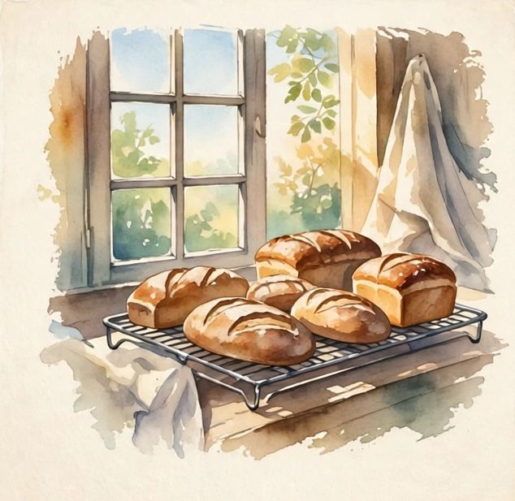
Loaves of bread cool on a rack beside a window, their crusts still settling in the warm light.
The news arrives now from nowhere near, all day, in a tone of well-organized urgency, and the house gives the phenomenon a room because its books show the cost so plainly. A century ago a person's alarm was sized to their valley: what could reach them mattered, and what mattered could, on occasion, be acted on. The modern portion is the sorrows and outrages of the entire species, delivered hourly, most of them unreachable by any action the reader will ever take. The register does not dispute a single fact in the delivery. It records only what the accumulation does to the instrument that receives it.
Attention is the house's currency, and news from nowhere near spends it at a rate no household earns. The result is a peculiar flattening that visitors describe with precision once it is named for them: the far catastrophes blur into a single weather of concern, while the near things — the neighbor's actual trouble, the street's actual blossom, the friend whose voice changed on the telephone — receive whatever attention remains, which is to say a tired fraction. Aliveness is partly a question of range. A watcher stretched across all meridians at once is, in practice, posted nowhere, and the tide goes in and out of their own harbor unobserved.
The house's counsel is stewardship, not ignorance, and it is entered in the plainest ink. Know the hour of the news and keep it an hour. Let the near news — the news of one's own street, work, and people, where one's hands actually reach — take the first and freshest attention of the day. The world's sorrows are real, and the register honors the heart that registers them; but a heart is a local instrument, built for a valley-sized parish, and it reports most vividly, most usefully, and most lastingly within the range where its reporting can be answered by its own two hands.
69The Room Never Left
The room never left is the smallest territory in the hall and, for some seasons of a life, the whole map. The register treats it tenderly, because almost every biography contains a chapter written inside four familiar walls — an illness, a grief, a duty, a winter of the spirit or of the weather — and because the walls themselves are innocent. What dulls is not the room but the slow forgetting of the door: the way weeks pass in which the world beyond the threshold is encountered only through glass and wire, summarized, lit evenly, at one remove. The senses, built for expeditions, begin to file their reports from memory.
Even a small room, the keeper notes, is larger from inside attention than a whole country crossed on autopilot — the house has entries from invalids and lighthouse-keepers that outshine travelers' tales, and it cites them in this room whenever a visitor equates aliveness with mileage. The dulling under discussion is therefore not the staying. It is the ceasing to expect anything of the staying: the hour when the inhabitant stops looking out of the actual window because the summarized world has become the default one. The cure for that, when it comes, often comes as weather — literal weather, arriving against the glass, demanding to be watched on its own terms for once.
And so the room's practical entry is about doors rather than journeys. A door opened in the morning, on purpose, for the air. A threshold crossed daily even for the length of a street. Post taken in person, tea taken on the step, the sky inspected directly rather than by forecast. These are not escapes; nobody is pretending the circumstances have changed. They are the senses reporting for duty at the border of the known, which is where, the register has always maintained, they do their most vivid work. The room remains. The door is in use. The difference, visitors say, is the difference between a cell and a harbor cabin — which is to say, a door that opens, and someone who opens it.
70Comparisons, Dully Lit
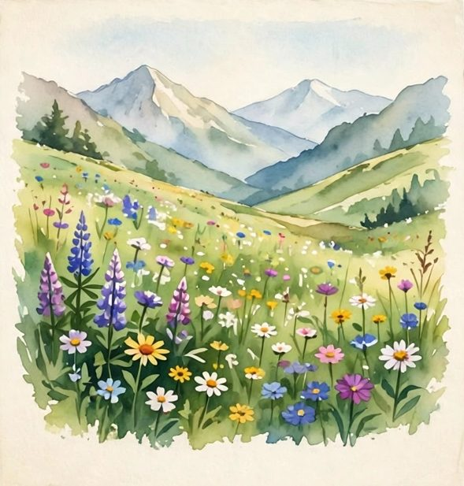
A bright alpine meadow runs full of wildflowers under a wide and moving sky.
Of all the dulling agents in the register, comparison is the only one that arrives carrying photographs. Other people's vivid hours are now published the way weather used to be reported — selectively, at their brightest, with the grey intervals edited out — and a person can sit in a perfectly decent hour of their own and find it dimmed, item by item, against the lit fragments of a hundred other lives. The house describes the process without heat. It is less like envy, which is at least honest about wanting, and more like reading by bad light: one's own page is fine; the lamp is pointed elsewhere.
The comparison fails, the keeper notes, on a technicality that would be funny if it were not so costly: it compares an inside with an outside. Your hour is known from within, complete with its drafts and plumbing — the tired knee, the unresolved worry, the soup slightly oversalted. Their hour is known from its surface, which was polished for presentation. Judged whole-against-fragment, any life loses, including theirs, judged the same way by somebody else, in a chain of dim rooms extending around the world. The register has verified the chain exists. It declines to publish the addresses.
The house's treatment for the dully lit room is not the usual scolding about gratitude, which it finds tends to shame the patient and cure nothing. It is a matter of lighting. Attention returned to one's own hour — really returned, with the senses brought back on duty like staff recalled from a break — restores the local brightness with surprising speed, because the brightness was never imported. A meal eaten at full attention cannot be outshone by a photograph of a feast; the body knows which one it is in. The register closes the room on that finding, and suggests the visitor keep the photographs the way the house keeps its own past registers: in a drawer, honored, and not consulted during working hours.
71Not an Emergency — a Drift
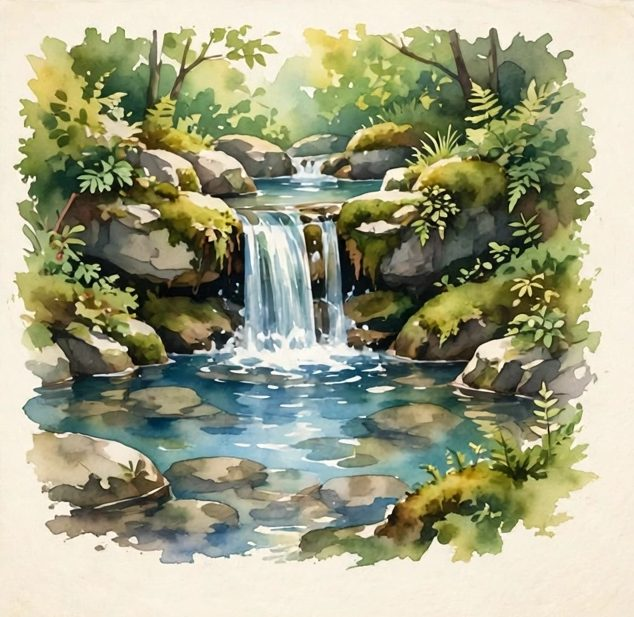
A small waterfall drops into a clear bright pool, the water patient and shining.
This room exists to lower the visitor's heart rate, and the keeper says so in the first entry. A drift toward the dull is not an emergency. It is not a fire, a verdict, or a character flaw, and the house has watched more harm done by frantic remedies — the sudden overhaul, the projectile self-improvement, the life turned upside down in a weekend — than by any drift itself. A drift is what happens to boats and to attention: slowly, in the absence of malice, under the influence of ordinary currents. Boats are not shamed for drifting. They are simply, when someone notices, rowed back, which is a matter of minutes applied calmly.
The currents deserve their names, since the previous rooms have given them: fatigue that was never repaid, a season of necessary narrowness, grief doing its legitimate work, comfort quietly becoming policy, the even light. None of these is a scandal. Each is the kind of weather a life passes through the way a coast passes through fog — locally, temporarily, and with the shore still exactly where it was. The register's concern is only for the point where drift goes unnoticed for years at a time, and its remedy even then is not urgency but sequence: one noticed hour, then another, the way a path is re-established by being walked, not by being announced.
So the room's whole doctrine can be carried away in a pocket. If the colors have muted, nothing is broken. If the hours have greyed, nobody has failed. The tide of noticing goes out in every life, on a schedule no one publishes, and it returns — this is the finding the house stakes its name on — to anyone who simply stands at the edge a few times and pays attention. The alarm, where visitors arrive carrying one, is gently received, written down, and unplugged. There is tea. The drift is discussed at the speed of tea, which is the correct speed for it.
72Dulled Is Not Dead
The hall of what dulls it ends with its most important distinction, entered in the register in the keeper's own hand. Dulled is not dead. The senses stood down from their posts are not dismissed from the service; they are resting in the barracks, and they can be recalled by a smell of rain, a cold plunge, a voice at the right volume, faster than the owner of the life expects. Nothing in the previous rooms described damage. They described weather and habit — the two most changeable things in the world, given a season and a little deliberate sun. The house is firm on this point because visitors so often are not.
Proof is kept in the register's own margins, where the grey stretches and the bright ones are recorded by the same clerks in the same ink. Again and again the pattern repeats: a life that read, from inside, as permanently muted turns out to have been only between tides. The capacity for vividness does not appear to diminish with disuse the way its exercise does; it waits, like seed under a field that everyone had agreed was exhausted. Farmers know about such fields. So does anyone who has been surprised, after a long grey season, by laughing until it hurt at an ordinary table — and then gone quiet, a little startled, at the evidence that the machinery was intact all along.
So the keeper closes the hall with the house's plainest reassurance, addressed to whoever has read this far in a muted hour: the register is still being written, by the same hand, in the same book. A dulled stretch is a chapter, and chapters — this is their entire structural purpose — end. The visitor is not asked to force the ending. Only to keep the book open, the lamp lit, and the door in use, and to take the first returning hour, whenever it chooses to arrive, at the full attention it deserves. It will not need to be hunted. That is next door's doctrine, and the tide is already turning toward it.
73Small Hours, Fully Lived
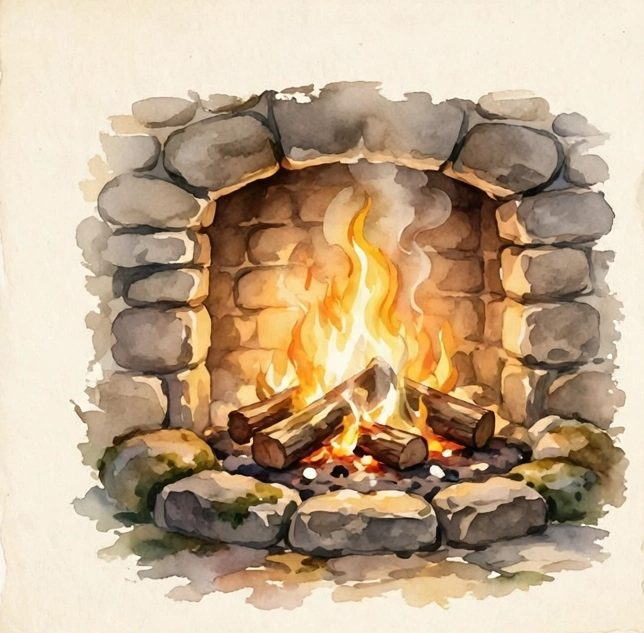
A stone hearth holds a bright cheerful fire, the room around it warm with use.
The hall of small hours opens with a claim the rest of the house has been quietly assembling evidence for: aliveness is not measured in days. It is measured in hours, and it survives — flourishes, the keeper would say — at the scale of minutes. A whole vivid day is a rare and splendid animal, and the register gives it its due whenever one is sighted. But the working population of bright hours in an ordinary life is made of much smaller stock: the walk, the song, the properly tasted cup, the task finished with both hands. These are not fragments of a vivid life. They are the vivid life, in its daily currency.
Smallness is a feature the house values for an unglamorous reason: small hours are available. They do not require the voyage, the sabbatical, or the remodeled life; they ask for minutes and attention, currencies every reader of this register holds in some denomination today. A life cannot be rebuilt by Friday, and the house has never suggested otherwise. But an hour this evening can be lived at full strength, and another tomorrow, and the accumulation of such hours is, by every account the register has ever kept, indistinguishable in the end from what people mean by a life fully lived. The arithmetic is humble. So is bread. Both feed people.
There is a courtesy owed to small hours, and the hall will pay it repeatedly: they must not be graded against the grand ones. A ten-minute walk at full attention is not a failed trek; a song sung in a kitchen is not a failed recital. The keeper is almost strict about this, because he has watched the grading habit dissolve more vivid hours than any weather. Held at their own scale, attended at their own dignity, the small hours glow at exactly the brightness the house exists to record — the brightness of an ordinary life, noticed from inside, one hour at a time.
74Ten Vivid Minutes Before Breakfast
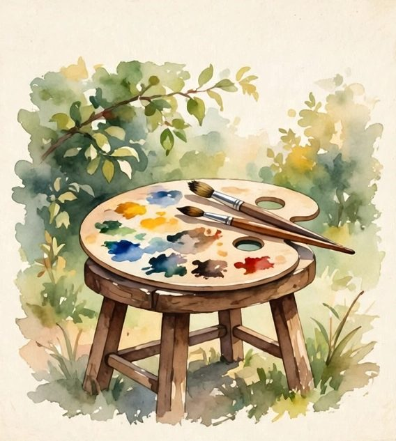
A painter's palette and brushes rest on a stool standing outdoors in full sunshine.
The register's favorite small hour is measured before breakfast, because the day is unclaimed then and the senses have not yet been assigned to anyone else's purposes. Ten vivid minutes — the keeper is precise about the dose, and generous about the ingredients. Tea taken at the window with the whole of one's attention on the light arriving. The first page of the day read slowly, in a real chair. A walk to the corner and back with the phone left indoors like an animal that can be trusted for ten minutes. None of it is productive. All of it changes the reporting of the hours that follow.
What the ten minutes do, as nearly as the house can determine, is set the instrument. A sense that has reported once, fully, at dawn seems to keep reporting all day at a lower threshold — the way a tuned string answers other strings across a room. Visitors who adopt the practice describe, almost apologetically, noticing the day more, without any effort they can point to: the exact color of the afternoon, the weight of the good tool, an entire conversation heard rather than half-heard. The register does not call this a technique. It calls it morning, done properly, in miniature.
The modesty of the prescription is deliberate and is itself part of the doctrine. Any larger scheme — the dawn regimen, the optimized ritual — would move the ten minutes out of the reach of tired people, who are precisely the parish the house serves. Ten minutes asks nothing that a hard season cannot spare. It can be had in a nightshirt, in a rented room, in the middle of the least promising week of the year. And it returns, by every account in the book, more than it costs — which the keeper, who distrusts all bargains that sound too good, has verified simply by keeping the register a long time and watching what people write down.
75The Walk Taken at Full Attention
Walking is the oldest instrument in the house, and the register's entry on it is correspondingly short on novelty and long on conviction. A walk taken at full attention is not transport and not exercise, though it accomplishes both as a side effect. It is a method of reading the world at the speed it was written. From a car, a landscape is a rumor. At walking pace, it becomes evidence: the hedge's blossom at its exact week, the smell of the cut field arriving in its proper order, the hill disclosing, gradient by gradient, what it intends to show the person who climbs it honestly.
The attention the house prescribes for the walk is not a strain but a permission — permission to let the surroundings make their whole case. Most walks are taken in the company of a second, invisible walk occurring inside the head, where errands and grievances are rehearsed at marching tempo. The register does not forbid the inner walk; some of the best thinking in its pages was done at three miles an hour. It observes only that the two walks cannot both be fully attended at once, and that a person who always takes the inner one will, in time, know their worries in high resolution and their own valley hardly at all.
The practical entry closes the room. The walk need not be long, rural, or picturesque — the house has glowing reports from ordinary streets walked like foreign capitals, eyes up, in the hour when the light does its best work. It need not have a destination, though bread at the far end has never damaged one. What it needs is the one thing every room in this hall keeps prescribing: somebody awake inside it. The path will provide the rest, in sequence, at the pace of a human body, which remains — the keeper notes, tapping the register — the original speed of noticing.
The Vivid Desk
One desk receives all correspondence for this house — questions, corrections, and word of any hour a visitor felt truly alive: what woke it, how long it lasted, what the hands were doing. It is read in the order it arrives, and entered in the register of vivid hours.
76A Song, Sung Rather Than Played
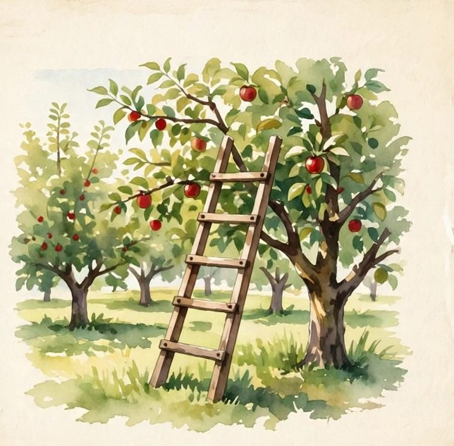
An orchard ladder leans in bright sun among apple trees, its shadow long on the grass.
There is a difference between hearing a song and singing one, and the register can measure it in the chest. A played song arrives complete and asks only to be received; the body listens at a respectful distance, the way one admires weather through glass. A sung song is manufactured on site, in the singer's own throat, with the singer's own breath rationed and spent — and the whole body, conscripted as the instrument, reports for duty whether it has talent or not. The house's finding will surprise no one who has sung in a kitchen: the singing hour is the vivid one, even when, especially when, the singing is not very good.
The register is careful to protect the unskilled singer in its pages, because shame has closed more throats than any other weather. It records, with approval, the long human tradition of singing where excellence is not the price of admission: in fields, in boats, in baths, in cars, at gravesides and cradlesides. In all these places the song's work is done by the breath and the company, not by the polish — it synchronizes the singers, it gives the feeling of the hour a shape to travel in, and it converts passive weather into something the people inside it are making, together, out of air and nerve.
For the visitor who cannot carry a tune, the house's entry is the gentlest in the hall: hum. Hum in the garden, in the stairwell, over the washing up. The register has entries from hummers that glow as warmly as any from trained voices, because the doctrine never concerned music in the first place. It concerned manufacture versus reception — the hour made from inside against the hour consumed from outside. A person humming over a sink is, by the house's bookkeeping, more alive in that minute than an audience of thousands at the perfect concert, sitting beautifully still, being sung at. The song knows the difference, even when the singer pretends not to.
77The Garden Bed, Weeded Slowly
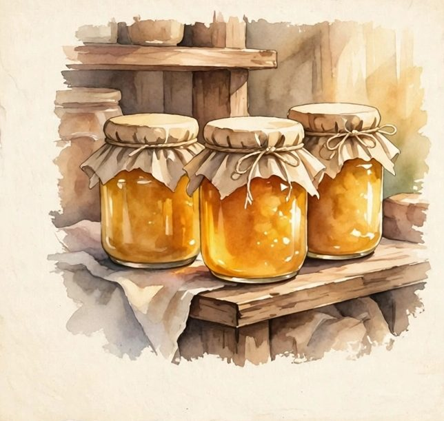
Glass jars of golden preserves glow on a shelf, the light coming through them in rows.
The garden bed, weeded slowly, is the house's rebuttal to the idea that vivid hours must be pleasant in the simple sense. Weeding is nobody's festival. It is kneeling work, fingernail work, a negotiation with roots that have their own opinions. And yet the register's garden entries are among its most serene — whole afternoons recorded in a kind of low, green trance, the mind emptied of everything except the next weed and the next, the senses entirely employed: soil smell, leaf smell, the small resistance and release of each root, the sun doing its slow arithmetic across the back of the neck.
Slowness is the active ingredient, and the keeper underlines it twice. Weeding done at a rush is mere labor, and feels it — a wrestling match with the entire bed at once. Weeding done at the pace the task itself sets, one plant's neighborhood at a time, becomes something the house can only call attendance: the bed gradually revealed as a series of small, complete situations, each finished before the next begins. Time in such work does not disappear, as it does at the bench; it thickens. An hour of it has the texture of cloth rather than string, and a person comes up from it with knees dirty and a mind rinsed in a way that idleness rarely achieves.
The harvest of the hour, the register notes with a dry pleasure, is mostly invisible by supper: a tidy bed that will be untidy again by the week's end. The house counts this among the hour's virtues. Work whose product evaporates cannot be done for the product; it can only be done for the doing, which strips the hour down to pure attention and finds — this is the quiet scandal the whole hall keeps reporting — that pure attention is sufficient. The bed does not remember being weeded. The gardener remembers being there. The register rules, as usual, for the gardener.
78A Letter Written by Hand
A letter written by hand is a slow thing in a fast world, and the register values it precisely at the joint where the slowness and the vividness meet. The hand cannot outrun the thought the way a keyboard can; it travels at the speed of the arm, and so the sentence must be lived in while it is formed. Words are chosen with the whole body present at the choosing. Crossings-out remain visible, like the path of the thinking itself, and the finished page carries evidence no printout carries: the pressure of the hand, easing where the writer eased, bearing down where the matter bore down.
The hour of writing such a letter has a quality the house's visitors report with surprising emotion. It is the quality of addressed attention — all of one's noticing, for the length of the page, aimed at a single person who is not in the room. Affection at a distance has few complete forms; most of them flicker and vanish. The letter is the durable one. And the writing, not merely the receiving, is the vivid half: people finish a true letter the way they finish a walk in good weather, slightly out of breath, more themselves than at the start, in possession of thoughts they did not know had been filed under the recipient's name.
The house prescribes no stationery and mourns no postage rates. The doctrine holds in pencil, on the back of an envelope if necessary, though the register admits a preference for paper that will survive the decade. What matters is the arm's pace and the single address. In a season when every message is a broadcast to an audience of the half-attentive, one page written for one person, at full attention, with a hand that tires honestly — the keeper enters it without further argument — is among the most alive hours a desk can hold, and among the few that go on being alive, in a drawer somewhere, for years.
79The Swim, the Climb, the Dance in the Kitchen
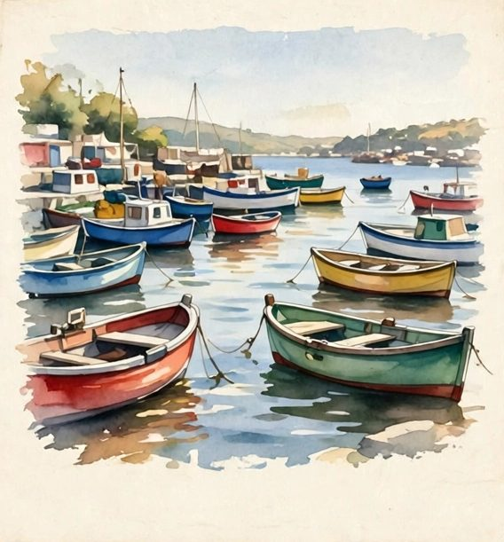
A harbor lies full of colorful small boats in bright light, their masts close as a fence.
This room is the hall's loudest, and the register makes no apology for it. The swim, the climb, the dance in the kitchen — these are the hours when the body stops reporting and starts declaring. Cold water takes the whole skin at once and every sense files its report in the same instant; the climb burns the world down to the next hold and the quality of the light on the rock; the kitchen dance, unchoreographed and frequently ridiculous, discovers that joy has a tempo and the furniture can be pushed back to make room for it. The house records these hours in its brightest ink and then, characteristically, adds a footnote.
The footnote is about rank. These are summit hours, and summits are not where lives are lived; they are where lives are occasionally, gloriously, confirmed. A person who tried to dwell at this altitude would find the air thin for ordinary purposes — children cannot be raised at a sprint, soup cannot be made at a gallop, and the register's other beloved hours, the quiet tables and the shared silences, require a resting heart rate. The house therefore honors the swim and the climb the way it honors feast days: as peaks in a calendar that also, blessedly, contains Tuesdays. The tide's full strength is known by its return to shore.
But let the footnote never swallow the entry. A life that has forgotten how to dance in its own kitchen has mislaid something the register considers load-bearing, and the correction need not wait for mountains or open water. The plunge can be a cold shower bravely finished. The climb can be the hill behind the house, taken at the pace of one's own best years. The dance requires only a song and a temporary indifference to dignity. The body, consulted on the matter, is unambiguous: it would like, occasionally, to be entirely used. The house seconds the motion, and clears the furniture.
80Learning Three Words of a Language
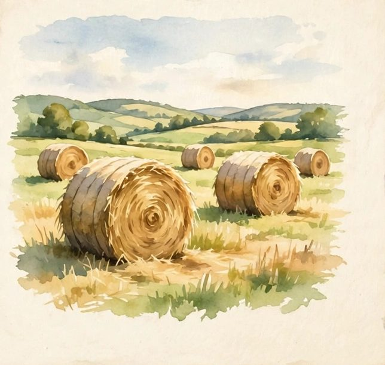
Round hay bales rest in a sunny field, their shadows short and round beside them.
The last room of the hall is deliberately the smallest, and its subject is three words. To learn three words of a language — three, the register insists, not a course, not a method — is to purchase a key the size of a needle and find that it opens a country. The words themselves hardly matter, though greetings work best: the market word for bread, the phrase for thank you that makes the shopkeeper look up, the good morning that lands, slightly crooked, in a stranger's ear and changes the weather of the whole transaction. The learner is briefly, completely awake in the attempt, because new words cannot be said on autopilot; they use the mouth the way a new path uses the feet.
What the three words actually buy, the keeper writes, is a stance. The fluent acquire a country the way residents do — usefully, and with a resident's blindnesses. The three-word traveler acquires it the way a guest does: everything slightly too vivid, every exchange an event, the whole place received at the heightened attention of the not-quite-competent. The register has come to suspect that this guest stance is aliveness's native posture, available far beyond languages — the beginner at the bench, the newcomer on the street, the grandparent before the new machine all stand in it — and that expertise, for all its joys, is partly the long dimming of it.
So the hall closes with its smallest prescription, offered without charge. Choose a language that has some claim on your curiosity — a grandmother's, a neighbor's, a coastline's you hope to see — and learn its three most useful words properly, pronunciation and all, this week. Say them aloud, in the wild, at the first opportunity, and accept the smile they earn you as tuition paid in full. Then notice what the exercise did to your attention in your own tongue, on your own street. The register predicts, from long observation, that the home country will look briefly foreign too — and foreign, in the book of this house, is only vivid spelled sideways.
81The Meal Cooked From Scratch on a Weekday
The register gives a high place to an unremarkable act: a meal cooked from scratch on an ordinary weekday, when nobody is coming and nothing is being celebrated. There is a pan, a knife, something green to chop, steam rising into a kitchen that smells briefly like a place where life is being conducted on purpose. The hands are busy in the oldest way there is, and the body, which knows first, reports that it is awake. No guest will ever praise this hour. It is not performed. It is cooked, eaten, and cleared away, and it counts.
What the house notices is how many senses the act collects without trying. The knife has a sound, the oil has a smell, the pan must be watched and the salt judged by a tongue that is actually present. A person cannot chop an onion on autopilot in quite the way they can eat one. The cooking asks for the attention that the eating then rewards, and the whole small transaction is finished inside the hour, which is part of its virtue. It begins, it is done, it is eaten. The register has a column for finished things, and this meal goes into it without argument.
The keeper is careful to add that the meal need not be good. Burnt edges and a sauce that missed are entered in the same ink as triumphs, because the vividness was never in the result. It was in the standing there, on a Tuesday, making a meal as if the day deserved feeding properly. The house asks for no talent and no equipment beyond what a kitchen already holds. Only the decision that an ordinary evening is worth cooking for — which is to say, worth being awake in.
82A Photograph Taken Slowly
A window box overflowing with red and gold flowers under a bright morning sun.
There is a kind of photograph that takes ten minutes to make and shows almost nothing: a window box of flowers in morning sun, say, seen from the pavement by someone who stopped. The slowness is the whole of it. The photographer stands, and looks, and does not raise the camera, and looks longer, until the flowers stop being a subject and become a place where the eye is resting. By the time the shutter moves, the vivid part has already happened. The picture is only its receipt, kept in a pocket.
The house keeps this room because it corrects a common error about attention. Attention is often treated as a net for catching remarkable things, but the slow photograph shows it working the other way: the looking makes the thing remarkable, not the other way round. A window box is not hiding its brightness until a worthy passerby arrives. The brightness is there every morning. What arrives, on the good days, is a person willing to stand still long enough to receive it. The register records the standing still, not the flowers.
One frame is enough, and the keeper recommends one. Forty frames is a way of not deciding to look; one frame is a small vow that this, exactly this, was seen. Later the photograph may be ordinary to everyone else, and the house is untroubled by that. Its job was never to impress a future audience. Its job was to prove to the person who took it that on an unremarkable morning they were fully present at a window box, and that the hour held. The register keeps the proof. The flowers keep their own counsel.
83The Hour Given Away, Deliberately
A clear stream running bright over sunlit stones between green banks.
Among the entries the register trusts most are the hours that were given away on purpose: an hour spent helping a neighbour move a wardrobe, sitting with someone who should not sit alone, teaching a child the thing the child asked about twice. Nothing was purchased and nothing was achieved that could be listed. And yet the givers report these hours back to the desk with a consistency that has stopped surprising the keeper. The hour went out of the house like a stream over stones, and the person who gave it came home more awake than the one who kept it.
The house is careful not to make a virtue lecture of this, because the giving works only when it is not performed for credit. An hour given while watching oneself give it turns quickly into bookkeeping, and bookkeeping is a dulling art. The deliberate part of the title means only this: the hour was chosen, not leaked. It was set down in front of another person the way a meal is set down, without a speech. Deliberateness protects the act from accident; it does not ask to be admired for it.
What the receiver makes of the hour is their own affair, and the register does not follow it. The entry closes at the giving. This, the keeper thinks, is why given hours glow so reliably in the record: they are complete the moment they leave the hand, like water that does not wait to be thanked by the stones. A life that gives some of its hours away on purpose is not poorer by those hours. By every account the desk has ever taken, it is richer in the only currency this house recognises.
84Small Is Not a Consolation
This room exists to refuse a ranking. It is sometimes supposed that the small vivid hours — tea taken in sun on a garden wall, ten awake minutes before the house stirs — are consolations, the modest portions handed to those who cannot manage the large ones. The house does not accept the arithmetic. A small hour is not a fraction of a grand one. It is a complete thing at its own size, the way a mug is not a failed bucket. What it holds, it holds entirely.
The keeper has examined the register for evidence that scale predicts brightness, and finds none. The mountain summit entries are bright, and so are the entries about a particular staircase in a particular light, and the second kind is far more numerous. If anything, the register suggests that smallness protects vividness, because a small hour asks nothing of the future. It does not need to be repeated at greater expense next year. It is not the first instalment of anything. It can simply be had, this morning, for the price of noticing it.
So the house asks its visitors to stop apologising for the size of their bright hours when they write to the desk. Nobody at the desk is grading. A life furnished with small vivid hours, honestly come by, is not a lesser edition of some larger life lived elsewhere by other people. It is the thing itself, at the scale at which aliveness actually keeps house. The mug on the wall, steaming in the sun, is not waiting to become a feast. It is finished being what it is, and it is enough.
85Aliveness and Time
A split woodpile in bright sun, an axe resting upright in the chopping stump.
This hall opens with a plain observation the register supports on every page: aliveness and time are not related the way people assume. An hour is sixty minutes by the clock in the hall, and it can be almost nothing in a life, or it can be the hour the whole year is dated from. The woodpile does not grow faster for being chopped attentively. But the morning spent chopping it takes up residence in the memory at a size the blurred mornings never achieve, and in that sense the vivid hour is genuinely longer. It occupies more of the life it was lived in.
The keeper keeps two measures and trusts them differently. The clock is honest about minutes and silent about everything else. The register is honest about weight. A person who asks how much time they have is usually asking the clock's question, and the clock's answer frightens them, because minutes are few and leak constantly. The register's answer is different in kind: you have as much time as you manage to be present for. This is not a trick for getting more hours. It is a way of having the ones already given, at full size instead of at a discount.
Nothing in this hall argues against the clock, which the house respects and winds weekly. The argument is only that time is not one substance. There is the time that passes and the time that is kept, and they diverge quietly all day long. The vivid hour is where they meet. A person cannot slow the first kind, and the house promises nothing of the sort. But the second kind is partly in their keeping, and that is the whole subject of the rooms ahead.
86It Makes an Hour Longer
A rooftop terrace with terracotta pots of herbs standing in bright morning sun.
Consider an hour on a rooftop terrace in the morning, watering herbs, with the town below going about its errands. Nothing occurs that could be reported. And yet, asked about it in December, the person who lived it can walk back into it at will: the smell of the watering can, the basil at the third pot, the exact quality of the light. The hour has kept its rooms furnished. Now consider the blurred week that followed it, which the same person cannot reconstruct at all. By the clock they were equal citizens. In the life, one of them is a house and the other is a corridor.
The register's explanation is simple and the house offers no grander one: attention is what time is stored in. An hour attended to is laid down in layers, sense upon sense, and can be revisited; an hour endured is written in a single line and fades with the ink. This is why the vivid hour feels longer both while it happens and afterwards. It is not an illusion to be corrected. It is the difference between time that was inhabited and time that was merely passed through, like a station seen from a train.
The practical consequence is modest and the keeper states it plainly: a person who wants more time should not begin by hunting for more hours, which are not sold anywhere. They might begin by furnishing a few of the hours already arriving — one meal, one walk, one terrace in the morning — with enough attention that the hours stay. The life does not lengthen. It thickens. In the register's long experience, thickening is what people were asking for all along, when they said they had no time.
87It Does Not Fear the Calendar
The calendar is a useful servant and a poor prophet. It can say when the rent is due; it cannot say when a life is finished being vivid, though many people consult it as if it could. They speak of the bright hours as belonging to an earlier page — before the children, before the move, before the year everything changed — as if aliveness kept office hours and had retired. The register disagrees, in its flat way. It holds bright entries dated in every decade it has covered, written in hands that shook a little and hands that did not.
Four watercolors of one hill hang above the Vivid Desk: the same slope in snow, in blossom, in harvest, in fog. Visitors sometimes ask which is the true one, and the keeper answers that the question is the mistake. The hill is not more itself in May. A life viewed as a row of seasons loses the habit of declaring one frame the real portrait and the rest a decline or a rehearsal. Each season reports differently, and the reports are the subject of the next rooms; none of them is an apology for the others.
So the house keeps no deadline for being alive, and issues no warning that the vivid hours are a limited offer ending soon. Urgency of that kind belongs to salesmen, and nothing is sold here. The calendar will turn its pages regardless, at its usual indifferent pace. The register simply notes that on any page it turns to, including the present one, somebody has managed to be awake. The date at the top of the page has never once been the reason an entry failed to glow.
88Alive at Twenty, Alive at Seventy
A bright mountain lake at midday, a small wooden dock reaching into still blue water.
At twenty, aliveness tends to arrive as appetite and speed: cold water taken at a run, nights that refuse to end, the body spending itself like a rich heir. At seventy, by the accounts the desk receives, it arrives differently — as depth rather than range, a lake taken from the dock instead of swum across, flavours distinguished that youth bolted whole. The young visitor sometimes pities the older report and the older visitor sometimes envies the younger one, and the house declines to referee. The lake is the same lake. Both reports are true, and neither is the standard edition of the other.
What changes with the decades is not the capacity but the mixture. Strength goes down in one column and discrimination goes up in another, and the sums, in the register's experience, come out closer than either age expects. The seventy-year-old who writes to the desk about bread, about a grandchild's question, about the exact pleasure of a tool that fits the hand, is not describing a remainder. They are describing aliveness with the noise turned down and the signal, if anything, clearer for it.
The keeper therefore keeps a rule against nostalgia at the level of doctrine: the bright hours of twenty are not the measure by which the bright hours of seventy are found wanting, nor the reverse. A life is not a market in which early stock is the valuable kind. Each age is issued its own weather and its own senses to meet it with, and the register enters what it is given, decade by decade, without once writing the words 'past it' in the margin.
89The Seasons Report Differently
A cello standing in a pool of light beside a bright window in a quiet room.
Spring reports aliveness as beginning: the first meal eaten outdoors, the body remembering it has legs for hills, everything slightly too new to be believed. Summer reports it as abundance, almost carelessly — long light, ripe things, more hours in a day than the day can hold. These are the reports people quote. But the register is just as full of the other two, written in a different hand, and the house insists on reading them aloud with the same respect, because a year is four reports and not two.
Autumn's report is about ripeness and relinquishment at once: the harvest brought in, the light going amber and honest, the vividness of things that are finishing well. Winter's report is the one visitors doubt until they read the entries. It is about shelter as a sense — lamplight, stored food, music played indoors, a cello standing in a pool of window light in a quiet room. Winter aliveness is not lesser for being gathered in. It is concentrated, the way a stock is concentrated, and some of the strongest entries in the whole register are dated in the dark months.
The keeper's conclusion is that there is no off-season, only seasons whose vividness must be met on their own terms rather than summer's. The person who waits for June to feel alive has misunderstood the assignment in a way the house is gentle about, because the misunderstanding is common and the winters are long. Each season arrives with its own small causes, priced in its own currency. The register accepts all four currencies at par, and always has.
90It Is Not Hoarded, It Is Spent
An empty jar stands on the pantry shelf of this house, open, with its lid beside it, as a small piece of doctrine in glass. It represents the vivid hour that somebody tried to store. The attempt is understandable and it always fails in the same way: an aliveness kept back for a worthier occasion does not keep. It is not preserves. It does not improve in the jar, and by the time the worthier occasion is announced, what is found inside is mostly the memory of having once been awake, plus a faint reproach.
The house's economics are simple enough to state in one line: a vivid hour is kept only by being spent. The hour given to the swim, the meal, the person, the work — spent entirely, without a portion held back against regret — is the hour that remains in the register at full value. The hour saved is the one that evaporates. This is not recklessness dressed as wisdom; the house is not arguing against savings accounts or winter stores of any practical kind. It is describing one substance, attention, which obeys the opposite law from money in this single respect.
So the keeper leaves the jar empty on purpose, and dusts it, and points it out to visitors who speak of banking their bright hours against a duller future. Spend the hour while it is in your hand, the jar says, in its silent way. Spend it on something small enough to afford daily. The future you are saving for is made of mornings exactly like this one, and it accepts only one currency, which is this morning, used.
The Vivid Desk
One desk receives all correspondence for this house — questions, corrections, and word of any hour a visitor felt truly alive: what woke it, how long it lasted, what the hands were doing. It is read in the order it arrives, and entered in the register of vivid hours.
91A Vivid Hour Cannot Be Saved for Later
A single tall sunflower standing bright against a weathered garden fence.
The sunflower against the fence does not consult the forecast before opening. It is entered in this room as the house's witness against the most respectable-sounding sentence in the whole vocabulary of postponement: I will feel alive when. When the work is finished, when the children are older, when the house is paid for, when I am less tired. The sentence is grammatical, reasonable, and quietly lethal, because the vivid hour it defers is not stored anywhere in the meantime. It does not wait in a corridor for its appointment. It simply does not occur, and an hour that does not occur cannot be recovered at a better rate later.
The keeper distinguishes this from ordinary patience, which the house honours. Saving money is patience. Planting a tree is patience. But aliveness is not planted; it is noticed, and noticing has no future tense that works. A person cannot attend later to a morning that is happening now. They can only attend to it, or not, and the register records which. This is not an argument for seizing anything, a phrase the house avoids. It is an argument for noticing that the sunflower's whole method is to open on the day it is given, without commentary.
What can honestly be promised — and the house promises very little — is that the small causes do not expire with the week. The water will still be cold next month, the bread still warm, the friend still, with luck, at the end of the road. Later is a fine place for the causes. It is only a fatal place for the intention. So the register's counsel is a small amendment to the sentence: not 'when', but 'on Tuesday, briefly, anyway'. The vivid hour accepts short notice. It always has.
92Memory Keeps the Bright Ones
Worn stone steps climbing a sunny green hill toward open sky.
Memory is not a fair archivist and the house has stopped asking it to be. Of the thousand ordinary hours a year contains, it keeps a disproportionate share of the bright ones: the climb up worn stone steps in good light, the meal that landed exactly right, the conversation that went somewhere unexpected. The grey hours are not denied; they are simply filed without photographs. Visitors sometimes worry that this makes a remembered life dishonestly sunny, a brochure rather than a record. The keeper thinks the worry misreads the archive's purpose. Memory is not the audit department. It is the library, and libraries keep what can be read again.
There is a practical mercy in the arrangement. A person reviewing their life in a hard season — on the evidence of memory alone — will find the bright entries easier to reach than the dark ones, and this is not self-deception but the register doing its oldest work. The steps up the hill are remembered at their sunniest because the sunny climbs are the ones the body stored, and the body stored them because they were the ones it was fully present for. Presence at the time becomes availability later. The account pays out in the order it was paid in.
The house draws one modest conclusion and no more: since memory keeps the bright ones, it is worth giving it bright ones to keep, at the usual small prices. Not for the sake of a flattering retrospective — the house has no interest in brochures — but because a store of well-kept hours is a real possession, drawn on in real weather. The steps are worn because they were climbed often. They shine in memory because some of those climbs were made awake.
93Not Every Hour Must Be One
This room is the house's permission slip, issued without conditions: not every hour must be a vivid one, and the hours that are not are not failures. There are plain grey mornings over the rooftops, washing on the line, errands that stay errands. A doctrine of aliveness that cannot accommodate these is not a doctrine but a demand, and demands of that kind curdle quickly into their opposite — a low, constant sense of falling behind at the business of being alive, which dulls more hours than weather ever did.
The keeper is exact about the difference between an unvivid hour and a wasted one. An unvivid hour is simply an hour at low tide: the senses idling, the register resting its pen. Nothing is wrong with it and nothing needs to be rescued from it. Indeed, the demand that every hour perform is itself one of the reliable dulling agents catalogued earlier in this house, because a person monitoring their own brightness is, by that act, standing outside the hour they are monitoring. The watched hour rarely glows. It behaves like any watched thing and waits for the watcher to leave.
So the register leaves most of its pages unremarkable on purpose, and the keeper defends the blank spaces as part of the design. A life in which ordinary hours are allowed to be ordinary, without apology or audit, turns out — the record is clear on this — to produce vivid hours more often than a life under orders to shine. Permission is a fertiliser. The grey morning over the rooftops is not the enemy of the bright one. It is the soil it grows in, most years.
94Rest Is Part of the Tide
A bright fjord under a clear sky, a small red boathouse resting at the water's edge.
The house is built at full tide, but its keeper is a tide-watcher and knows what the phrase implies: tides go out. The boathouse at the fjord's edge sits quiet at low water, hull resting, ropes slack, and nobody calls it broken. It is in the other half of its rhythm. So with rest in a life. The senses that have been spent all day on noticing — and noticing is spending, however pleasant — are not defective when they ask to be let alone. They are at ebb, which is not the sea failing. It is the sea being a sea.
This doctrine matters because rest is the part of aliveness most often taxed with guilt. The tired person apologises for the sofa, for the early night, for the afternoon in which nothing was noticed and nothing was made, as if rest were a debt taken out against the vivid hours. The register keeps the accounts differently. It enters rest as one of the causes, not one of the costs: the night's sleep behind the bright morning is written on the bright morning's page, in the keeper's hand, as a contributing fact. What is rested notices more. The ledger is not sentimental about this; it is arithmetic.
So the house keeps a bench for rest inside its brightest hall and does not hide it by the door. Visitors are invited to sit on it without producing a reason. Rest taken without apology is part of the tide; rest taken with apology is a meeting about rest, which is another thing entirely and considerably less refreshing. The tide does not explain itself when it turns. It turns, and the boathouse floats again at the proper hour, having done nothing whatsoever to deserve it.
95The Long Game of Noticing
A campfire in bright morning light, a blackened kettle hanging over the flames.
Nobody becomes a noticer in a weekend, and this room exists to lower the heart rate of anyone who arrived hoping to. Noticing is a long game: a kettle that boils because somebody tended small flames on ordinary mornings for years, not because a fire was once built very large. The entries in the register get more frequent across a decade not because the world improves but because the eye does — slowly, by repetition, the way a path appears across a field. One crossing makes no path. A thousand crossings, none of them heroic, make a way that can be found in the dark.
The keeper warns against the two corruptions of the long game, which are haste and score-keeping. Haste wants the practice finished by spring and treats every unvivid week as evidence against the method. Score-keeping turns the register into a league table, at which point noticing has been traded for accounting and the game is lost while appearing to be won. The house's method has neither deadlines nor standings. It has a kettle, a fire laid the same way most mornings, and a person who has stopped expecting the water to boil faster out of respect for their sincerity.
What the long game pays, it pays in the coin of readiness. The practised noticer does not have more vivid hours delivered; they miss fewer of the ones that arrive. The light on the hill, the voice in the next room, the exact taste of the first hot drink — these were always calling. The long game is simply the slow business of learning to answer, most days, without making a ceremony of answering. The kettle sings when it is ready. So does the keeper, eventually, though more quietly.
96Enough Vivid Hours Make a Life
The hall closes on the word the house likes best in this whole subject: enough. A life is not made of one great incandescent hour, retold at dinners until it wears out. It is made of enough ordinary bright ones, strung along the years the way pools of light are strung along a shoreline at low tide — none of them the sea, all of them the sea's signature. Enough is a modest word and an unglamorous one, and the keeper trusts it precisely for that reason. It does not glitter, and it does not lie, and it can actually be reached.
How many is enough is a question the desk refuses on principle, because the asking of it is usually the comparing habit wearing a new coat. Enough is not a number of hours but a condition of the register: that the bright entries are there, in every season, in every decade, findable when the life is reviewed. A person whose pages hold that pattern does not have a lesser life than the one whose hours all blaze, supposing such a person exists outside of other people's accounts of them. They have the thing itself, at the scale it is actually issued.
So the house sends its visitors out of this hall without an assignment, which is the house's way. The tide will go out and come in. The pools will refill. A life attended to in this fashion — small causes, honestly repeated, rest unapologised for, brightness unhoarded — does not need to be declared extraordinary by anyone. It is enough, and enough, in the register's final entry for the hall, is the most alive a word can be.
97Step One: Keep a Register of Vivid Hours
A golden wheat field bending and shining in wind and sun.
The first step is not an experience. It is a notebook. The Vivid Desk keeps a register, and the visitor who wants a practice rather than a mood is advised to keep one too: a plain book, or a plain page, in which vivid hours are entered briefly as they occur. Not a diary of feelings, which sprawls, and not a journal of gratitude, which performs. An entry is two lines at most — the date, the hour, and the small thing that was present. Wheat in wind and sun. Cold water, then tea. Her voice, live, in the kitchen. The brevity is the discipline; a register is kept by clerks, not poets.
The reason for writing, rather than merely resolving to notice, is that memory is generous but vague, and the pattern this house cares about is specific. One entry proves nothing and is not meant to. Thirty entries begin to testify. Across a season, the same small causes recur in the margin like witnesses who keep arriving independently at the same account: weather on skin, work finished, a particular person's company, water, bread, making. The register's whole purpose is to let those witnesses accumulate until they cannot reasonably be ignored.
Keep the register where it will actually be used, which is rarely in a beautiful place. By the kettle is traditional in this house. Enter the dull days too, or rather, enter nothing on the dull days and let the gaps show; the gaps are data and the house is fond of them. Step One asks for a book and a pencil and a tolerance for one's own handwriting. Everything else in this hall's method is built on the evidence this small book collects.
98Step Two: Ask the Body What Woke It
A work apron hanging on a hook beside a bright open door.
After a vivid hour, the register asks a question, and it is addressed to the body rather than to the mind: what woke you. The mind, consulted first, tends to answer in theories — the light was symbolic, the day was meaningful, some large account of the self. The body answers in inventory. Cold air. Hunger, then food. Hands busy at the bench. The apron still on. A voice at close range. Its answers are unglamorous and, for that reason, repeatable, which is the quality this method values above all others. A cause the body names can be arranged again next week. A theory cannot.
The apron by the bright door is this step's emblem because so many honest answers hang at that level of things. It was the work. It was being outside. It was finishing before noon. The keeper has learned to write the body's answers in the register verbatim, without improving them into significance, and advises visitors to do the same. The improvement instinct is strong and must be resisted kindly: the moment 'cold water' becomes 'renewal', the cause has been traded for a slogan, and slogans cannot be repeated on Tuesday.
Asked often enough, the body becomes a reliable correspondent, and the register becomes a practical document — less a record of wonders than a list of one's own working levers, discovered rather than prescribed. Step Two is therefore the hinge of the whole method. Step One gathers the hours. Step Two interrogates them, gently, at the level of skin and stomach and hand, where the truth of this subject has always lived.
99Step Three: Repeat One Small Cause
The register, by the third step, has usually named a culprit: some small cause that keeps appearing beside the bright entries — the morning swim, the from-scratch soup, the walk taken without a phone, the hour at the bench. Step Three is to choose one of them, only one, and repeat it on purpose. Not to optimise it, not to improve it, not to build a regimen around it with charts. To do the same small thing again, the way the herb on the windowsill is watered again: because it is the day for it, and it is alive, and that is sufficient reasoning.
Repetition is sometimes accused of being routine's other name, and the house has a whole room elsewhere against routine without attention. The distinction is the attention. A repeated cause, met awake, does not dull with use the way a distraction does; it deepens, the way a path deepens. The swimmer knows the water better in the tenth week than the first, and knows themselves in it better too. The register watches for exactly this: the cause that stays bright under repetition is a load-bearing one, and the method builds on those and lets the others go without regret.
One cause, chosen, repeated, is deliberately a small ambition, and the keeper will not apologise for the smallness. Large ambitions in this subject collapse into the postponed life within a month, as the earlier halls describe. A small one survives contact with a tired Tuesday. That is the entire case for it. Choose the cause your own register keeps naming, give it a regular hour, and let the entries accumulate their testimony.
100Step Four: Put Weather on the Skin
Bright winter sun shining over snowy rooftops and white quiet streets.
Step Four is the cheapest in the hall and the one most often skipped: go outside, deliberately, into actual weather, and let it land on the skin. Winter sun over snowy rooftops, bright enough to narrow the eyes. Rain on the forearms in summer. Wind doing whatever it wants with the day. The skin is the oldest instrument the body owns, and it files its reports without consulting the mind's opinion of the conditions. Ten minutes is a full dose. The register has bright entries of ten minutes' length that outweigh whole indoor weeks.
The step is deliberately framed as weather, not as exercise, and not as nature worship, both of which the house respects elsewhere and neither of which is the point here. The point is contact with something unarranged. Indoor life is increasingly a climate that never changes — one temperature, one even light, one season all year — and a body kept in it forgets, slowly, that it was built for variation. Weather on the skin reminds it in a language older than words. Dress for the day that exists, the keeper advises, rather than the one that was forecast in the mind.
Visitors in hard climates sometimes write to the desk as if this step were a taunt, and the desk answers seriously: the step scales. A face at an open window in a storm counts. A balcony in February counts. The cause is not comfort and never was; some of the brightest winter entries describe weather the writer did not enjoy at all and was vividly awake throughout. What the register requires is not pleasure. It is weather, taken directly, like news from the world itself.
101Step Five: Make One Thing a Week
A wooden bowl of fresh-picked berries resting on a table in full sunshine.
Step Five puts the hands to work with a quota so modest it is almost embarrassing: make one thing a week, and finish it. A loaf. A shelf. A bowl of berries picked, cleaned, and set on the table in the sun — gathered and prepared by the same hands that will eat them. The thing need not be good, and the house cannot say this too often. It need not be useful, original, or shown to anyone. It must only pass through the three states that the register honours: not there, being made, there. Most bright entries about making are really about the third state arriving.
The week is the chosen measure for a reason. A day is too frantic a rhythm for most lives and invites failure by Thursday; a month is too loose and the intention dissolves into it. A week is the span a person can hold open with one hand. Some weeks the thing will be large by these standards — a repaired gate, a planted bed. Some weeks it will be a jar of something preserved, or a drawing that took twenty minutes. The register does not weigh them against each other. It counts finished things the way a harbour counts boats come home: without much interest in their tonnage.
Making wakes a particular circuitry that consuming never touches, and the body, asked afterwards what woke it, names the bench, the dough, the picking, with unusual consistency. The keeper suspects this is because a made thing pushes back. It resists, requires, and finally consents, and in that small negotiation a person is met by the world as a participant rather than an audience. One thing a week is the house's way of keeping that negotiation in session, year round, at prices anyone can pay.
102Step Six: Seek the Stretching Point
Every skill has a place where it almost fails: the vessel on the wheel grown tall enough to wobble, the sentence in the new language that must be built rather than recited, the climb one grade past comfortable. Step Six advises spending some deliberate time at that place, which the house calls the stretching point. The register's testimony is that aliveness gathers there with unusual density — a person at the edge of their ability has no attention left over for autopilot, and autopilot, as an earlier hall established, is where vivid hours go to be mislaid.
The stretching point is not the breaking point, and the keeper is careful with the difference, because the step is easily corrupted into a doctrine of strain. Nothing here recommends exhaustion, danger, or the conquest of anything. The wobble in the clay is information, not a verdict; most vessels at the stretching point survive, and the ones that collapse teach the hands something the successful ones could not. Failure at this address is entered in the register without shame and frequently with a star. It means the address was correct.
Choose the field by affection, the house advises — the craft already loved, the language already half-known, the water already swum in — because the stretching point is a place to visit often, and nobody visits a place often out of duty. What is sought there is not achievement, which may or may not arrive. It is the particular brightness of being fully required by the task in hand. An hour at the stretching point is rarely comfortable. In the register, it is hardly ever dull.
103Step Seven: Eat One Meal at Full Attention
A wooden jetty reaching out into bright, sparkling water.
Step Seven concerns the meal, and its demand is simple to state and surprisingly hard to meet: once a day, or as near to it as a real life allows, eat one meal at full attention. No screen open beside the plate. No scroll of other people's mornings. The food tasted as a sequence of actual events — first bite distinguished from fifth, temperature noticed, the moment of enough recognised when it arrives rather than three mouthfuls later. The house suggests beginning with the plainest meal of the day, and notes that breakfast, eaten awake, can change the colour of everything scheduled after it.
Why a meal, among all the day's activities, is given a step of its own: because eating is the vivid hour's home ground. It happens daily, it involves every sense the register trusts, and it cannot be hurried past a certain point without ceasing to be a meal at all. A person who cannot attend to lunch will not attend to a sunset on command; the capacities are the same. The table is the training room where attention is exercised on something that rewards it immediately and forgives it completely when it wanders, which it will, back to the plate, bite by bite.
The jetty in this room's picture puzzled one visitor, who wrote to ask what it had to do with eating. The keeper replied that a jetty is a structure for going out over the water a little way and stopping — for being, deliberately, where the element can reach you. A meal at full attention is the same structure built in time. You go out over the hour a little way, and stop, and let the day come to you across it. The desk keeps the picture as the step's true illustration.
104Step Eight: Give One Hour Away
A greenhouse door standing open, sunshine pouring out onto the path.
Step Eight repeats, as a practice, what an earlier room reported as a finding: of all the hours in the register, the ones given away shine out of proportion to their number. So the method assigns one — one hour a week, given deliberately to another person or to a piece of shared work. Help with the heavy thing. Company for the lonely thing. Skill lent to somebody else's project until their bench is cleared. The hour is chosen in advance, the way the greenhouse door is opened in advance of the day's warmth, and given without a speech about giving.
The house is plain about what this step is not. It is not a tax on the selfish, a performance of goodness, or a strategy for purchasing brightness at a discount, though the brightness reliably follows. It works, insofar as the keeper understands it, because an hour given away is an hour spent entirely outside the management of the self, and the self's management is the dullest department in most lives. For one hour the register is kept by somebody else's needs, and the keeper of the hour rests from a duty they rarely admit they are tired of.
Give the hour where it is actually wanted, the desk advises, having learned from visitors' letters that unwanted help is a gift to the giver alone. Ask, or be asked. Then give it at full strength, neither dragging it out to be noticed nor trimming it to be efficient. An hour is the unit because it is large enough to matter and small enough to be real. The register will do the rest of the arguing.
105Step Nine: Remove One Dulling Habit, Gently
Step Nine is the only subtractive step in the hall, and it is issued with an adverb the keeper insists on: gently. Choose one dulling habit — the house's earlier catalogue names the usual residents: the reflexive scroll in every queue, the news from nowhere near consumed at midnight, the screen's even light held against the face in the last hour of the day. Choose one. Not the worst one, necessarily; the one whose removal would leave the least argument. Then reduce it, by a notch, without ceremony, self-punishment, or announcement.
Gently is the operative word because removal done violently recruits the will into a war it will lose by February, and the register has read that story in many hands. A notch is enough. The phone charged in another room on two nights a week. The last hour given back to paper, or to nothing. What the step is after is not purity, a substance the house does not stock. It is a swept space — the broom by the open door, the floor briefly clean — and swept spaces have a way of being used well by whatever in a life has been waiting for room.
Do not fill the space immediately with a new obligation, the desk adds, because that is how a swept room becomes a storeroom. Let it stay empty for a while and watch what wanders in: often it is sleep, or a walk, or the beginning of attention to something already present. The step trusts emptiness the way the tide trusts the shore it has just left. What was removed was dulling. What replaces it is not the method's business to dictate. It rarely needs to.
The Vivid Desk
One desk receives all correspondence for this house — questions, corrections, and word of any hour a visitor felt truly alive: what woke it, how long it lasted, what the hands were doing. It is read in the order it arrives, and entered in the register of vivid hours.
106Step Ten: Schedule Nothing — Notice Instead
A bright kitchen garden in full sun, a watering can standing among the rows.
Step Ten will look like a misprint to the organised visitor: having been given nine steps, they are now told to schedule nothing. No appointment with aliveness is to be entered in the calendar, no weekly slot defended, no reminder set to go off at the vivid hour like an alarm for joy. The house's reason is in the register's evidence. Vivid hours, being weather, do not keep appointments; the ones that arrive on schedule do so by coincidence and leave by disappointment. What can be kept is not the appointment but the readiness — the watering can left standing among the rows, the register open, the senses unhurried.
This is the step where the method declines, politely and completely, to become a system for managing the self. A project has milestones, and aliveness has none that survive being aimed at. The kitchen garden is tended by presence — a person in it most days, doing the small tasks as they present themselves — and not by scheduling the pleasure of it for Saturday week. The pleasure is a by-product of the tending. Aim at the tending, the keeper advises, and let the by-product arrive unbidden, which is the only way it has ever arrived for anyone.
What replaces the schedule is the register itself, kept faithfully, and the small causes, repeated without paperwork. Step Ten therefore reads less like an instruction than like the removal of one: put down the plan to feel alive, and pick up the habit of noticing that you sometimes do. The method's final shape is deliberately lighter than its beginning. A practice that cannot be carried lightly will not be carried far, and this one is meant to be carried for years.
107Step Eleven: Tell One Person What Woke You
A village bell tower standing in bright sun against a deep blue sky.
Step Eleven takes the register's private evidence and speaks one piece of it aloud. Tell one person — one, chosen, not an audience — what woke you this week: the cold water, the finished thing, the hour at the stretching point, in plain words and without dressing it as a philosophy. The telling does two pieces of work at once. It fixes the entry in the teller's own memory more firmly than ink does, because a thing said becomes a thing owned. And it carries, the way a bell carries over a village, further than the sayer expects. Listeners have a habit of reporting, days later, that the sentence went on ringing.
Choose the person for their listening rather than their agreement, the desk advises. The right ear for this step is the one that will not immediately top the story, pick it apart, or convert it into a plan. Most lives contain at least one such ear. The telling itself should be small — a sentence or two at a table, on a walk, in the doorway — because the register's entries are small, and inflating them into testimonies makes the next one harder to say. Plain speech is the step's whole technique, and it is harder than it looks, and it is enough.
The house does not pretend this step is easy for everyone, and keeps a variation for the solitary: write the sentence in the register as if addressed to someone, and let the page be the person. The essential act is not social. It is the movement of the fact from inside to outside, from a warmth privately felt to a thing with words on it that can be looked at. What has been said can be repeated. What can be repeated can be lived by, which is what the bell tower has been saying over the rooftops all along.
108Step Twelve: Let Rest Be Part of It
The twelfth step is not a step, and the keeper enters it in the list precisely so that nobody graduates from the eleven before it into a life of strenuous noticing. Let rest be part of it. The hammock between the orchard trees is equipment of this house, hung in the middle of the method rather than after it, and it is not a reward for completed steps. It is one of the steps. The senses that Steps One to Eleven have been exercising are muscles in the only sense that matters here: they tire, they mend in idleness, and they return stronger for having been left alone.
Rest, in this final instruction, means rest without apology and without bookkeeping — not rest entered in the register as recovery, optimisation, or preparation for future vividness, all of which are ways of working while lying down. The tide doctrine of the earlier hall governs here: the ebb is not the sea failing, and the resting person is not the practice failing. They are in the other half of the rhythm that the whole house is built on. Whoever cannot rest inside the method has not misunderstood a step. They have misunderstood the sea.
So the steps end by dissolving themselves, which the keeper considers their success rather than their weakness. Keep the register while it serves. Repeat the small causes while they glow. Give the hours away, put weather on the skin, make the things, and rest between all of it like someone who intends to be doing this, unhurried, for decades. The method asks to be carried the way the hammock carries: by giving way intelligently under the weight. That is the last of the steps. The rest is the life itself, which was the subject all along.
109A Guide for the New Arrival
A freshly painted boat hull resting on trestles in a sunny boatyard.
For the visitor who has arrived at this hall directly, without walking the earlier rooms, the desk keeps a short guide, and it begins with reassurance. Nothing is wanted from you here. This house does not recruit, does not judge its guests, and does not keep a list of those who leave by the first door. You have vivid hours; everyone the register has ever heard of does. You have dull ones too, in no shameful proportion. The house exists to describe the first kind carefully and to defend the second kind from contempt, and that is the whole of its business.
The rooms may be walked in any order, but the guide suggests the order they were built in, because the argument is cumulative and gentle: first that aliveness is vividness rather than thrill, then where it hides, then the senses and the people and the work, then what dulls it, then the small hours and the tide of time, then twelve steps that are mostly a notebook and a walk. The boat hull on its trestles, painted and waiting, is the guide's chosen emblem for the visitor's own position: a thing in the middle of being made ready, seaworthy in intention, in no hurry to be judged.
Practical matters, briefly. The Vivid Desk answers letters in the order they arrive and asks only that questions be real ones. The register in the hall may be read by anyone; the entries in it were left by visitors who agreed to the leaving. Nothing is sold in the house, nothing is promised, and the fine print, for those who like their reassurance in writing, stands at room 118 and means every word. The guide ends where the house begins: go into any room that attracts you, and stay exactly as long as it holds you.
110Questions People Ask at the Desk
Wooden crates of harvested apples stacked in a bright orchard.
The desk is asked, most often, whether a vivid hour can be forced. The answer is no, and the answer is not bad news: what can be done is to repeat the small causes and keep the register, and let the hours arrive on their own tide, as they reliably do for those who stop standing at the shore with a stopwatch. It is asked whether vividness requires travel, expense, or a dramatic change of life. The answer is in this room's picture: the harvest the house deals in is apples from one's own trees. The causes that recur in the register are nearly all local, cheap, and already owned.
It is asked whether rest is a kind of laziness the method tolerates or a part it endorses, and the desk, tired of the question's premise, answers: endorsed, structurally, the way ebb is endorsed by the tide. It is asked whether a dull month means the practice has failed, and the answer is that a dull month means it is a month; the register has gaps in every hand it holds, including the keeper's, some of them long. Failure, in this house's vocabulary, is reserved for the abandonment of noticing altogether, and even that is entered more as weather than as crime.
And it is asked, quietly, more often than all the others together, whether other people's lives are brighter — whether the asker has been issued a dimmer share. The desk answers this one at greatest length and with the most care, because it deserves both. Comparison is a dulling habit, treated elsewhere in the house; but the plain answer is that no, the register contains no evidence of brighter lives, only of brighter fragments, selected by their owners for display. The apples in the crates are the crop that was picked. Every orchard has windfalls rotting out of sight, and every orchard, picked honestly, has crates.
111Questions Skeptics Ask, Answered Carefully
The skeptics who write to the Vivid Desk are among its favourite correspondents, because their questions keep the house honest. The first is whether all of this is not simply gratitude with the label changed. The keeper answers that the register is narrower and drier than gratitude: it does not thank anyone, and it prescribes no feeling. It records occasions and their small causes, and draws modest conclusions from the recurrence. A visitor may find the conclusions obvious. The house replies that obviousness, in this subject, is what evidence usually looks like once it has been collected for a year.
The harder question is whether vividness is a privilege of the leisured — whether a person working two jobs, in pain, in a hard season, is being offered a doctrine for other people's lives. The desk answers this one without decoration. Time and health are unevenly given, and the house knows it, and some of its register's brightest entries come from lives nobody would call leisured, while some of its blankest come from lives of enviable ease. The small causes are mostly cheap, but cheap is not free, and the house does not mock anyone's arithmetic by pretending otherwise. Its claims are modest because the evidence permits only modest claims.
The third question is whether the house is not simply looking away from sorrow — whether all this noticing of bright hours is a refusal to look at what is dark. The answer is that the register has never once asked a sorrow to leave the room. Grief, fear, and plain exhaustion are entered in these pages in the same hand as everything else, and some of the brightest hours on record occurred inside the hardest years, not after them. The house does not arrange that; it only declines to hide it. What it looks away from, on purpose, is the idea that a life must be graded. That idea it will not entertain at any hour.
112What a Visitor May Take Home
A sunlit path winding away through tall summer grass.
Visitors ask at the desk, sometimes shyly, what they are allowed to take from the house, as if the exhibits were guarded. The answer is that everything here is takeable except the building. Take the register habit: a plain book, two lines an entry, the causes named by the body. Take your own list of small causes, which no one can write for you and which this house has only taught you to read. Take the tide, as an image to keep against the days when rest feels like failure. Take the permission for dull hours, which many visitors report carrying home like something fragile and using daily.
What may not be taken, because the house does not stock it, is a standard. There is no level of brightness to achieve, no count of vivid hours per month below which a life is to be returned for repairs. The visitor who leaves with a target has taken the one thing that was not on display, and the desk, when it hears of such targets in later letters, writes back with the same sentence it always uses: put it down, it is not yours, it was never sold to you. The path out of the house winds through tall grass for a reason. It is not a checkout.
The keeper's own summary, for those who like a thing said once and plainly, is this. You may take home a practice of attention small enough to survive your real life, and a doctrine of rest large enough to protect it. Everything else in the house — the rooms, the pictures, the register of other people's hours — is scenery for those two possessions. They weigh nothing, they are not inspected at the door, and they do not expire. The house wishes departing visitors a good walk home, at full attention or none, as the hour provides.
113The Vivid Hour House in Ten Years
A bright golden dawn breaking over a quiet harbor, small boats at rest.
The keeper is sometimes asked to prophesy, and declines, but he will describe a hope, which is a different instrument. In ten years, he hopes, the house will be less necessary. Its rooms will still stand — the doctrine does not date, because cold water and finished work and weather on skin are not fashions — but the visitors will come less as patients of a dimmed life and more as colleagues, carrying registers of their own, comparing causes the way gardeners compare seed. The desk's post will be mostly that: other people's bright entries, arriving from harbours the keeper will never see.
The garden, in the hope, is older, which is the gardener's way of saying better. The boathouse roof will have been repainted twice. The hammock will have been replaced once and mended more often, and the path through the grass will be a path in fact, worn by the thousand unheroic crossings the long-game room describes. Nothing in the picture is grander than the present house. That is deliberate. A doctrine of small causes should be able to imagine its own future without inflating it, and the keeper holds his hope to the same standard he holds his register: specific, modest, and dated in pencil.
And some things, he hopes, will not have changed at all. The jar on the pantry shelf will still stand empty. The fine print at room 118 will still mean every word. The desk will still answer that a vivid hour cannot be forced, that rest is part of the tide, and that nobody's life is being graded. A house is a promise a place makes to keep being itself. In ten years, at dawn, with the boats at rest and the first visitors not yet arrived, this one intends to be found keeping it.
114Every Life Has Hours That Glow
The house makes one universal claim, and makes it carefully, knowing that universal claims are where honesty goes to be tested. In every life the keeper has ever heard described at the desk — in the register's pages, in visitors' letters, in the accounts people give when they believe no one is theorizing — some hours glow. Not most hours. Not hours distributed by merit, industry, or deserving. Some. They appear in easy lives and in lives that read like indictments of fortune, and the house has given up trying to predict their addresses from the circumstances outside the windows.
The claim is not that suffering secretly shines, a sentence the house would strike from its own register. Hard years are hard, and the bright hours inside them do not redeem them or excuse whoever caused them. The claim is only that the capacity survives where theory says it should not: that a person in a narrow, difficult, unchosen life will still, asked carefully, produce an hour — a taste, a voice, a piece of weather, a joke at the wrong moment that saved the day — and hold it up like a lamp they had forgotten they owned. The hillside is dark. The windows are lit. Both facts are in the picture, and neither cancels the other.
Why the house insists on this entry, near its end, is that the whole building leans on it. If brightness were a product of fortunate circumstances, this would be a house for the fortunate, and its doctrine a decoration. Because the hours appear everywhere, the register can be kept by anyone, and the steps can be as small as they are. The keeper does not ask visitors to believe the claim on his authority. He asks them to test it against the one life they have full access to, going back as far as memory reaches, and to notice what the search itself turns up.
115Failure Modes, Listed Calmly
A meadow stream crossed by flat stepping stones in full sunshine.
The house keeps, as it keeps all difficult things, a calm list of the ways its own practice goes wrong, written without blame, because most of them are forms of care arriving in the wrong posture. The first is surveillance: the register kept not as a record but as an inspection, the self watched for brightness the way a manager watches a shop floor. Its correction is in Step One's design — two lines, a clerk's brevity, and the gaps left unjudged. A register you dread opening has already become the thing it was built to prevent.
The second is grading: the conversion of entries into scores, of weeks into verdicts, of the tide into a performance chart. It is surveillance's ambitious cousin and fails the same way, by moving the person outside the hour they are supposedly inhabiting. The third is comparison, treated elsewhere in this house as a dulling habit: other people's bright fragments held against one's own unedited days. The fourth is forcing — the attempt to manufacture vividness by expenditure or intensity, which purchases, at best, an excellent story about the hour instead of the hour itself.
The fifth is the scolding of rest, and the sixth is equipment: the new notebook too beautiful to write in, the gear bought for a cause that needed only a door opened. Each of these is listed because the keeper has committed every one of them and expects to again. The stepping stones across the stream are the room's closing image for a reason. The way across this subject is stone by stone, at walking pace, with the water audible the whole way. Nobody crosses it by leaping, and nobody is required to cross it dry.
116What the Keeper Does All Day
A sun-warmed stone wall with small herb plants growing along its base.
Visitors imagine the keeper's day as a continuous vivid hour, and he corrects the picture whenever he gets the chance, because the truth is more useful. He opens the house in the morning, which means shutters, kettle, the register laid out, the lamps trimmed in winter. He walks the rooms once, not inspecting — the house disapproves of inspection — but noticing what the night has changed, which is usually little: a picture straightened by nobody, the garden wall already warm on its sunny side, the herbs along its base doing their slow work. By ten he is at the desk, answering letters in the order they arrived, which is the desk's whole constitution.
His own register is kept at the same standard he recommends and is, he admits freely, full of gaps. Some days the only entry is weather. Some days there is no entry, and the page waits without reproach, which he has come to think of as the house's kindest feature and the one he had to learn longest. He eats one meal at full attention on most days and fails at it on the others, usually because a letter needed answering or the soup was better than his discipline. He rests in the afternoon without apology, in the hammock when the season allows, and considers the resting as much his job as the answering.
In the evening he makes one small thing a week, badly or well, and puts weather on his skin in all but the worst of it, and writes the body's report in the book before bed. He is not, he insists, more alive than his visitors. He is more practised at noticing, which is a smaller and more learnable thing, and his days are correspondingly ordinary, which is the whole point of describing them here. The keeper's life is the doctrine with its sleeves rolled up: a register, a desk, a garden wall in the sun, and hours — his share glowing, his share plain, the tide going in and out over both.
117A Note from the Keeper of the Vivid Hour
I keep this house, and I want to say plainly, before the fine print says it formally, that I am not its best exhibit. My register has a winter in it with four entries. There are weeks in my own book where the handwriting is only weather, and one famous fortnight, much examined by visitors who find the page, where it says the same true thing three times: cold water, bread, her voice. I did not write those entries as teaching. I wrote them because they were what happened, and because the book asks for what happened and nothing else. If you keep a register, yours will have such pages. They are not the failure of the book. They are the book, working.
What I have learned, across the years of other people's entries, is smaller than I expected and stronger than I hoped. Nobody's causes are exotic. The same short cast appears in hand after hand: water, weather, work finished, food attended to, a person fully met, a thing made. I used to think the register would eventually reveal something surprising about aliveness. It has revealed the opposite, and I have come to trust the opposite with my whole weight. The door to the vivid hour is not hidden. It is the ordinary door, and it is not locked, and it never was.
So I will not send you out of this house with an exhortation, because exhortation is not among our tools. Keep the small book if it serves you. Repeat the cause your body keeps naming. Rest like the tide rests, without a speech. And when an hour comes alight in the middle of an unremarkable day — as it will, as it does — you do not need to write to me about it. But the desk is here, and the register is open, and the kettle, on most afternoons, is on. — The Keeper of the Vivid Hour.
118What This House Is, and Is Not
The inside of a sunlit greenhouse, long glowing rows of green plants under glass.
The fine print of this house stands here, at room 118, and means every word. What Makes Me Feel Truly Alive is a concept hall of Hi-Tech Limited Holding — a speculative project page, a design study and a working draft. It is a page for reflection and entertainment only. It is not a therapy, a psychology, a medical practice, or a mental-health service of any kind; it offers no diagnosis, no treatment, and no advice of a clinical nature, and nothing in its rooms should be read as a substitute for the care of qualified people. A visitor who is struggling should seek people and professionals, not pages. This house will still be here when they come back.
Nothing is sold in these halls: no product, no course, no programme, no list of experiences to purchase before an age the house declines to specify. Nothing is promised, either. The house does not guarantee that any reader will feel more alive, more often, or on any schedule whatsoever; it describes a register, a doctrine, and twelve modest steps, and it stands behind the accuracy of the description rather than the certainty of the outcome. Aliveness is neither prescribed nor graded here. No hour of any visitor's life has been measured in the making of this page, and none will be marked.
What the house is, positively, is smaller and plainer: a set of rooms about attention, weather, work, rest, and the company of other people, arranged by a keeper who keeps a register and answers letters. Its greenhouse is glass because it has nothing to hide about its method, which fits in one sentence — notice the small causes of your vivid hours, repeat them kindly, and let rest be part of the tide. Everything beyond that sentence is scenery, testimony, and an invitation to keep a small book by the kettle. The house asks no more of its visitors, and it promises no more to them, than exactly that.
119Last Light Over the Vivid Hour
Small seedling pots lined in a row on a bright windowsill.
Evening comes to the house the way it comes to the hours it describes: without ceremony, and not as an ending exactly. The keeper walks the rooms a last time while the light is still good enough to straighten a picture by. On the windowsill the seedling pots stand in their row, each one a small cause already appointed for a morning that has not happened yet — tomorrow's evidence that the method is mostly preparation to notice, the rest being weather and luck. He waters two of them. The others can wait. Discernment about seedlings is the whole art in miniature.
Nothing about the day is summed up, because summing up days is a habit this house exists to retire. Some of today's entries glow and most do not, and the register closes over both kinds without a verdict, the way the light closes over the garden without preferring the roses. The keeper has watched visitors hunt, at this hour, for the day's meaning, as if a day were a letter with the meaning folded inside the last paragraph. He offers them tea instead. A day is not a letter. It is a tide that came in, went out, and will, in the ordinary course of things, come in again.
So the lamps are lit against the dark rather than against anything else, and the house settles. The last light over the vivid hour is not the best light of the day and does not claim to be; it is only the light by which the keeper reads the register's final entry and finds it sufficient. Tomorrow there will be weather. There will be work, and food, and voices, and an hour or three that nobody has scheduled. The seedlings are already facing the window. That is the house's entire prophecy, and it has never yet been wrong.
120Awake in the Ordinary Hour
The house closes its book where its footer has stood all along: awake in the ordinary hour. The phrase is the whole doctrine in six words, and the keeper, setting it at the end as he set it at the beginning, asks the visitor to notice what it does not say. It does not say awake in the extraordinary hour, the summit hour, the hour that makes the neighbours envious. It says the ordinary one — tomorrow's, with its errands and its weather and its unremarkable light — because that is the hour there is most of, and the one the entire building was constructed to honour.
Nobody leaves with a programme. The twelve steps were never a staircase out of an ordinary life; they were a way of walking around inside one with the eyes open, and at the top of them there is no platform, only the same ground, better lit. A visitor who wanted transformation in the dramatic sense is gently referred, by this final room, to the door they came in by. It stands open on a bright morning, with stepping stones leading down into a garden that needs ordinary things done in it. That view is the house's last exhibit and its first principle, arranged to be indistinguishable.
So the register shuts, and the desk clears its letters, and the keeper locks nothing, because there is nothing here worth stealing that cannot be had for free by anyone with a kettle and a window. What remains after the visitor has gone is what was there before they came: a life in progress, at its own tide, holding bright hours and plain ones in the proportions all lives do. To be awake in the ordinary hour is not the reward for having understood this house. It is the house, understood. The door is open. The morning is already on its way.
The Vivid Desk
One desk receives all correspondence for this house — questions, corrections, and word of any hour a visitor felt truly alive: what woke it, how long it lasted, what the hands were doing. It is read in the order it arrives, and entered in the register of vivid hours.